Constituem conjunto de dados que fornecem as localizações espaciais de fenômenos ou eventos observados (Peter J. Diggle 2013; Adrian Baddeley, Rubak, e Turner 2015; Scalon 2024). São modelos matemáticos que descrevem a disposição de eventos que estão irregular ou aleatoriamente distribuídos no plano, ou no espaço (J. Illian et al. 2008). São conjuntos contáveis de eventos espaciais que surgem como realizações de processos estocásticos (aleatórios ou probabilísticos) de eventos espaciais tomando valores em uma região plana \(B\subset \mathbb{R}^{2}\)(Moller e Waagepetersen 2003; Mateus 2013; Leininger 2014; Moraga 2023).
Seja \(S \subseteq \mathbb{R}^{d}\) um espaço métrico, onde \(\mathbb{R}^{d}\) denota um espaço euclidiano \(d\)-dimensional, onde os eventos ocorrem. Um processo pontual espacial em \(B\subseteq \mathbb{R}^{d}\), é uma coleção de variáveis aleatórias {\(n(S): S \subseteq B\)}, onde \(n(S)\) representa o número de eventos ocorridos em um conjunto mensurável \(s\) de \(B\).
Processos pontuais referem-se a uma área da estatística espacial que estuda a distribuição de eventos em uma área geográfica específica delimitada, onde as coordenadas geográficas são a própria informação. Isto é, os eventos são geralmente representados por pontos e descritos utilizando coordenadas geográficas. São exemplos de processos pontuais, coordenadas geográficas da localização de: árvores, estabelecimentos comerciais, acidentes rodoviários, epicentros de terremotos, crimes/raptos, ninhos de pássaros, Universidades, etc.
Dependendo do número de tipos diferentes de eventos considerados, um processo pontual pode ser classificado como univariado, quando envolve um único tipo de evento ou mais de um tipo de evento sendo estudado cada um separadamente, ou seja, sem investigar a relação entre diferentes eventos; e multivariado, quando envolve mais de um tipo de evento e o objetivo é investigar a relação entre diferentes eventos (dependência interespecífica). Esta pesquisa se concentra exclusivamente em processos pontuais univariados.
5.1 Elementos de processos pontuais
Nesta seção, apresentamos os principais elementos que compõem os processos pontuais, incluindo as marcas e as covariáveis.
Marcas
Um processo pontual espacial pode envolver não apenas a localização dos eventos no espaço, mas também informações qualitativas ou quantitativas adicionais associadas a cada evento, ou localização \(s_{i}=(x, y)\), em que \(x\) e \(y\) são as respectivas coordenadas. Essas informações adicionais são denominadas marcas, e são representadas por \(m(s_{i})\)(J. B. Illian 2019; Adrian Baddeley, Rubak, e Turner 2015; Scalon 2024). Assim, considerando \(B \subseteq \mathbb{R}^{d}\) e \(C \subseteq \mathbb{R}\), em que \(B\) representa a região em que ocorrem os eventos ou fenômenos \(s_{i}=(x, y)\) de interesse e \(C\) as informações adicionais para cada evento ou fenômeno \(s_{i}=(x, y)\), um processo pontual marcado \(M(B \times C)\), pode ser representado:
\[
M(B \times C) = \{[s_{i}, m(s_{i})]\}= \{[s_{1}, m(s_{1})],[s_{2}, m(s_{2})], \ldots, [s_{n}, m(s_{n})]\},\,s_{i} \in B,\,m(s_{i}) \in C.
\tag{5.1}\]
Em um processo pontual onde os eventos são localizações de árvores em uma floresta, exemplos de marcas incluem a altura das árvores, tipo de espécie florestal, diâmetro à altura do peito (DAP), entre outros. Em um processo pontual com eventos sendo acidentes de trânsito em uma cidade, as marcas podem representar a gravidade do acidente (ferimentos leves, graves ou fatalidades). Em um processo pontual onde os eventos são estabelecimentos comerciais em uma cidade, as marcas podem representar o tipo de estabelecimento (restaurantes, lojas de roupas, supermercados).
Covariáveis
Além das marcas, um processo pontual pode incluir variáveis explicativas, também conhecidas como covariáveis. Essas covariáveis são variáveis adicionais que auxiliam na compreensão dos motivos pelos quais os eventos ocorrem em determinados locais ou por que ocorrem de maneira desigual.
Adrian Baddeley, Rubak, e Turner (2015) definem covariáveis como quaisquer dados tratados como explicativos e não como resposta, tomando como exemplo, uma função espacial \(z(s_{i})\) que descreve a altitude no evento \(s_{i}\), em uma floresta. Em um processo pontual onde os eventos são crimes em uma cidade, as covariáveis podem incluir densidade populacional, níveis de desemprego e acesso a serviços policiais.
5.2 Propriedades fundamentais de processos pontuais
Estacionaridade e Isotropia
Um processo pontual é estacionário se a distribuição espacial dos eventos é invariante sob condição de translação (J. Illian et al. 2008; Adrian Baddeley, Rubak, e Turner 2015). Seja \(N=\{s_{1}, s_{2}, \ldots , s_{n}\}\) um processo pontual e \(N_{t} = \{s_{1} + t, s_{2}+t, \ldots , s_{n} +t\}\) a sua translação, este será estacionário se para qualquer \(t\in \mathbb{R}^{d}\), \(N\) e \(N_{t}\) apresentarem a mesma distribuição espacial dos eventos, ou seja,
em que \(t\) indica as unidades transladadas. No caso de um processo pontual marcado, onde \(m(s_{i})\) é a marca associada ao evento, a expressão Eq. 5.2 fica representada por:
Seja \(N=\{s_{1}, s_{2}, \ldots , s_{n}\}\) um processo pontual e \(R_{\alpha} N = \{R_{\alpha}s_{1}, R_{\alpha}s_{2}, \ldots , R_{\alpha}s_{n}\}\) a sua rotação, onde \(\alpha \in [0^{o}, 360^{o}]\). Este processo será isotrópico se a distribuição espacial dos eventos \(N\) e \(R_{\alpha} N\) for a mesma, ou seja,
Um processo pontual é considerado homogêneo quando os eventos ocorrem em proporções iguais na área de estudo. Isso significa que a probabilidade de encontrar um evento em qualquer sub-região da área de estudo onde ocorrem os eventos, é constante e igual. Em contraste, se essa probabilidade não for constante e variar, indicando que certas áreas são mais propensas a ter um maior ou menor número de eventos, ou se os eventos ocorrerem apenas em algumas sub-regiões específicas da área de estudo, diz-se que o processo pontual apresenta tendência espacial.
Pela teoria de probabilidade sabe-se que dois eventos \(s\) e \(Z\) são independentes se e somente se \(P(S\cap Z) = P(S)P(Z)\), ou seja, eles serão independentes se e somente se sua probabilidade conjunta (ocorrência simultânea) for igual ao produto de suas probabilidades marginais (ocorrências individuais), como evidenciado por (Ferreira 2020).
Da mesma forma, pode-se aplicar essa lógica ao conceito de independência de dois ou mais eventos em processos pontuais. Em um processo pontual, dois ou mais eventos são considerados independentes se a ocorrência de um evento em um determinado local ou sub-região da área de estudo não influencia a ocorrência de outros eventos.
5.3 Principais distribuições de probabilidade em processos pontuais
Nesta seção, apresentamos as principais distribuições de probabilidade, incluindo distribuição uniforme, binomial e Poisson.
Distribuição Uniforme
Seja \(B\) a região de estudo e \(|B|\) a sua área ou volume correspondente. Diz-se que os eventos de um processo pontual qualquer estão uniformemente distribuídos em \(B\), se a probabilidade de ocorrência for constante na região \(B\) e zero fora dela, ou seja,
\[
f(s_{i}) = \left\{\begin{array}{rcl}
\frac{1}{|B|} & \text {se} & (x,y) \in B \\
0 & \text{ se } & (x,y) \notin B .
\end{array}\right.
\tag{5.6}\]
Considerando \(S \subseteq B\), como uma sub-região de \(B\), onde \(|S|\) e \(|B|\) são as áreas ou volumes correspondentes, a probabilidade dos eventos \(s_{i} \in s\) ocorrerem na sub-região \(s\) é,
\[
P(s \in S) = \int f(x,y) dx dy = \frac{1}{|B|} \int_{S} 1 dx dy = \frac{|S|}{|B|} ,
\] em que \(s_{i}=(x, y)\).
Distribuição Binomial
Seja \(S \subseteq B\) e \(n(S \cap B) \in B\) representando os eventos no processo pontual \(s\) na região de estudo \(B\), onde \(|S|\) e \(|B|\) são as áreas ou volumes correspondentes. Diz-se que os eventos aleatórios \(n(S \cap B)\) do processo pontual \(s\) seguem distribuição binomial, se resultam de ensaios independentes e idênticos, com apenas dois resultados possíveis, sucesso (\(p\)) ou fracasso (\(1-p\)), constantes em cada ensaio, ou seja,
Sabe-se da teoria de probabilidade que o valor esperado (média) de uma distribuição binomial \(X\) é dado por \(\mu = \mathbb{E}(X) = n\times p\), onde \(n\) é o número de ensaios realizados. Substituindo \(p = \frac{|S|}{|B|}\) e \(X\) por \(n(S\cap B)\), obtém-se o número médio de eventos de um processo pontual dado por,
onde \(\hat{\lambda}(s)\) é denominado estimador da intensidade \(\lambda (s)\), e corresponde ao número médio de eventos por unidade de área ou volume sob condição de homogeneidade.
Distribuição Poisson
A distribuição Poisson é comumente empregada para modelar a ocorrência de eventos raros e independentes em uma área de estudo. Assim, um processo pontual que segue a distribuição Poisson descreve o número de eventos raros que ocorrem em uma determinada área de estudo, e sua distribuição de probabilidade é dada por,
Um processo pontual que segue uma distribuição Poisson e é homogêneo, é denominado processo pontual Poisson homogêneo. Este processo é caracterizado por ser estacionário e isotrópico, razão pela qual é também denominado processo de aleatoriedade espacial completa (não exibe dependência espacial), e se a região \(B\) de estudo é dividida em \(s\) sub-regiões diferentes, a intensidade \(\lambda (s)\) nessas \(s\) sub-regiões, estimada por \(\hat{\lambda} (s)\) será constante (não variará), ou seja, \(\forall s_{i}, s_{i^{'}} \in B: \lambda (s_{i}) \equiv \lambda (s_{i^{'}})\). Isso decorre do fato de que a distribuição Poisson possui média e variância iguais, e sua relação com a distribuição Binomial é demonstrada em Lima (2005) e Mateus (2013). Caso o processo pontual seja Poisson, mas apresente tendência, ele é denominado processo pontual Poisson não homogêneo. Nesse contexto, embora o processo não exiba dependência espacial, a intensidade \(\lambda (s)\) nas \(s\) sub-regiões não é constante, ou seja, \(\exists \, s_{i} \in B: \lambda (s_{i}) \neq \lambda (s_{i^{'}})\) e, o número médio de eventos nessa situação é dado por, \(\mu = \int_{B} \lambda (s)\).
5.4 Propriedade de primeira e segunda ordem
Propriedade de primeira ordem
Sejam \(S_{i}\) e \(S_{i^{'}}\) sub-regiões de \(B\) contendo os eventos \(s_{i}=(x,y)\) e \(s_{i^{'}}=(x^{'},y^{'})\), onde o número de eventos é dado por \(n(s_{i})\) e \(n(s_{i^{'}})\) e sua área dada por \(|S_{i}|\) e \(|S_{i^{'}}|\) respectivamente. A propriedade de primeira ordem, também designada intensidade \(\lambda(s_{i})\), corresponde o número de eventos esperados por unidade de área, ou seja, \(\lambda (s_{i}) = \lim_{|S_{i}| \to 0} \left\{\frac{ \mathbb{E}[n(s_{i})]}{|S_{i}|}\right\}\), conforme descrito por Mateus (2013), Pebesma e Bivand (2023) e Moraga (2023).
Se o processo pontual for homogêneo, a intensidade \(\lambda (s_{i})\) é constante, e dado por, \(\lambda (s_{i}) = \lambda =\frac{ \mathbb{E}[n(s_{i})]}{|S_{i}|}, \,\hat{\lambda}= \frac{n(s_{i})}{|S_{i}|}\).
Para ilustrar estes conceitos, vamos simular um Processo Pontual de Poisson Não-Homogêneo, onde a intensidade dos eventos aumenta conforme a coordenada \(X\) aumenta (um gradiente).
Código
pacman::p_load(spatstat,ggplot2,patchwork)janela <-owin(c(0, 10), c(0, 10))funcao_intensidade <-function(x, y) { 5* x }set.seed(123)pp_simulado <-rpoispp(funcao_intensidade, win = janela)plot(pp_simulado, main ="Tendência em X", pch =19, cex =0.4)
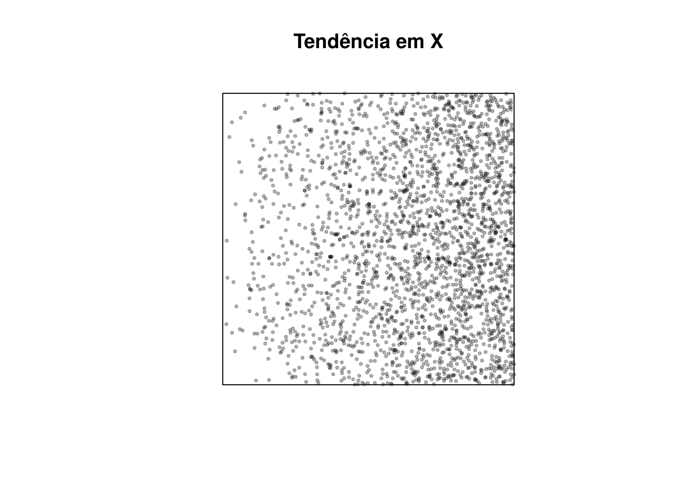
Uma maneira de verificar se a intensidade é constante consiste em dividir a área de estudo em sub-regiões ou quadrats do mesmo tamanho (área), contar os eventos em cada sub-região ou quadrats e dividir pela respectiva área da sub-região ou quadrats. No entanto, este procedimento resulta em uma intensidade não suavizada ( Figura 5.1 (a)).
Outra alternativa é usar uma janela móvel de tamanho fixo, centrada em vários locais da área de estudo. Ao mover essa janela pela região, os eventos são contados e divididos pela área da janela, proporcionando uma estimativa mais suave e interpretável da variação da intensidade \(\lambda (s_{i})\) ( Figura 5.1 (b)). No entanto, em cada uma das estimativas de intensidade (com janela móvel ou sub-regiões do mesmo tamanho), não se considera a localização relativa dos eventos dentro janela/sub-região (se os eventos estão próximos ou afastados) e a escolha de um tamanho de janela adequado não é clara (Gatrell et al. 1996).
Vale ressaltar que a variação na intensidade é mais significativa em processos pontuais não homogêneos. Assim, no caso do processo pontual não homogêneo, uma maneira de estimar a função intensidade \(\lambda (s_{i})\), é usando os estimadores não paramétricos de kernel, onde a janela ou quadrats outrora descrita (o), é substituída por uma função (Kernel) que descreve um objeto tridimensional móvel, e que pondera os eventos dentro de sua esfera de influência consoante a distância do ponto onde a intensidade está sendo estimada (Gatrell et al. 1996) ( Figura 5.1 (c)). Essencialmente, neste método estima-se a função de densidade de probabilidade \(f(z)\) e não função intensidade \(\lambda(s_{i})\).
A função de densidade de probabilidade descreve a probabilidade de observar um evento em uma determinada região de estudo e esta função é não-negativa e integra para 1, enquanto a função intensidade \(\lambda (s_{i})\) não é uma medida de probabilidade, mas sim uma medida da taxa de ocorrência de eventos em uma determinada área, que embora seja não-negativa, não precisa integrar para 1, pois ela não descreve uma distribuição de probabilidade (Moraga 2023).
Embora a função de densidade de probabilidade \(f(z)\) e a função intensidade \(\lambda(s_{i})\) não sejam iguais, estas são proporcionais, o que significa que locais com maior taxa de ocorrências dos eventos (intensidade), terão também maior densidade de probabilidade \(f(z)\). Assim, a função densidade de probabilidade e função intensidade são dadas por,
onde \(\int_{B} \lambda (s_{i})ds_{i}\) é o número esperado de eventos na região \(S_{i}\),\(\hat{f}(z)\) e \(\hat{\lambda}(z)\) são respectivamente estimadores Kernel não paramétricos da função densidade e intensidade, no local \(z\) da região \(B\) em estudo, com base nos eventos \(s_{i}\).\(K(s)\) é uma função densidade de probabilidade simétrica tal que \(\forall s, \, K(s)\geq 0\), com \(\int_{B} K(s)=1\), designada função Kernel e \(h\) é um parâmetro de suavização ou largura da banda ( Figura 5.1 (c)).
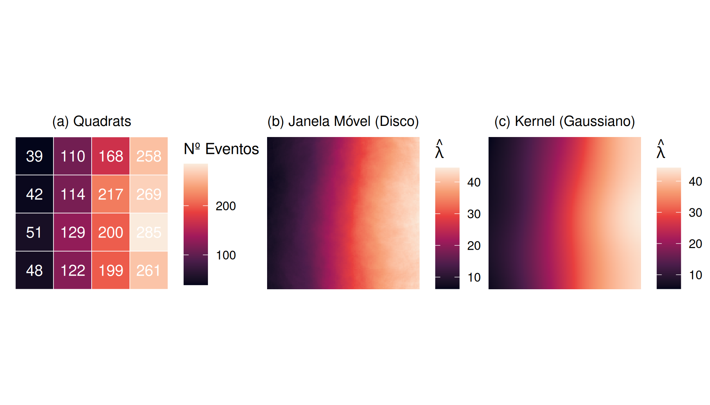
Figura 5.1: Comparação de Estimadores de Intensidade: (a) Quadrats (Não suavizada), (b) Janela Móvel (Disco Uniforme) e (c) Estimativa de Kernel (Gaussiano).
Conforme descrito por Gatrell et al. (1996) e Gelfand et al. (2010), o estimador de Kernel \(K(s)\), é sensível à escolha da largura de banda \(h\), de tal modo que, um valor maior de \(h\) resulta em maior suavização na variação espacial da intensidade (viés aumenta e a variância diminui), enquanto menor valor de \(h\) resulta em menor suavização (viés diminui e a variância aumenta). Portanto, testar várias larguras de banda é uma opção viável para selecionar o valor ideal do parâmetro de suavização, mas também existem métodos computacionais que permitem uma escolha mais eficiente, como a validação cruzada por verossimilhança ou outros descritos por Cronie e Van Lieshout (2016).
As escolhas comuns para o Kernel \(k(s)\) incluem \(K(s)=\frac{1}{\sqrt{2\pi}}\exp\left(-\frac{s^{2}}{2}\right)\),\(K(s)=\frac{3}{4} (1-s^{2}) \mathbb{I} (|s|<1)\),\(K(s)=\frac{15}{16} (1-s^{2})^{2} \mathbb{I} (|s|<1)\),\(K(s)=\frac{1}{2} \mathbb{I} (|s|<1)\), que correspondem a kernel Gaussiano, Kernel Epanechnikov, Kernel Quadrático e Kernel Uniforme, respectivamente. Além destas, existem outras na literatura e algumas são apresentadas na Figura 5.2.
Código
pacman::p_load(ggplot2, dplyr,tidyr,spatstat, patchwork)#PARTE 1: Curvas Matemáticas 1Ds <-seq(-1.5, 1.5, length.out =500)df_curves <-data.frame(s = s) %>%mutate(Gaussiano =dnorm(s), # Aproximação padrãoEpanechnikov =ifelse(abs(s) <1, 0.75* (1- s^2), 0),Quadratico =ifelse(abs(s) <1, (15/16) * (1- s^2)^2, 0),Uniforme =ifelse(abs(s) <1, 0.5, 0),# Adicionando um extra comum para comparaçãoTriangular =ifelse(abs(s) <1, 1-abs(s), 0) ) %>%pivot_longer(cols =-s, names_to ="Kernel", values_to ="Peso")# Gráfico das Curvasp_curves <-ggplot(df_curves, aes(x = s, y = Peso, color = Kernel)) +geom_line(size = .5) +facet_wrap(~Kernel, nrow =1) +theme_minimal() +labs(title ="", x ="Distância (s)", y ="Peso K(s)") +theme(legend.position ="none", plot.title =element_text(hjust =0.5))#PARTE 2: Visualização Espacial 2D pp_unico <-ppp(x =5, y =5, window =owin(c(0, 10), c(0, 10)))# Função auxiliar para gerar o raster do spatstat e converter para data.frameget_kernel_raster <-function(pp, kernel_name, sigma=1.5) { k_spatstat <-switch(kernel_name,"Gaussiano"="gaussian","Epanechnikov"="epanechnikov","Quadratico"="quartic", "Uniforme"="disc") if(is.null(k_spatstat)) return(NULL) dens <-density(pp, sigma = sigma, kernel = k_spatstat) df <-as.data.frame(dens) df$Kernel <- kernel_namereturn(df)}#lista_dfs <-lapply(c("Gaussiano", "Epanechnikov", "Quadratico", "Uniforme"), function(k) get_kernel_raster(pp_unico, k))df_raster <-do.call(rbind, lista_dfs)p_raster <-ggplot(df_raster, aes(x, y, fill = value)) +geom_raster() +facet_wrap(~Kernel, nrow =1) +scale_fill_viridis_c(option ="mako") +coord_fixed() +theme_void() +labs(title ="Efeito no Espaço (2D)" ) +theme(legend.position ="none",strip.text =element_text(size =11, margin =margin(b=5)),plot.title =element_text(hjust =0.5, margin =margin(t=15, b=5)))p_curves / p_raster
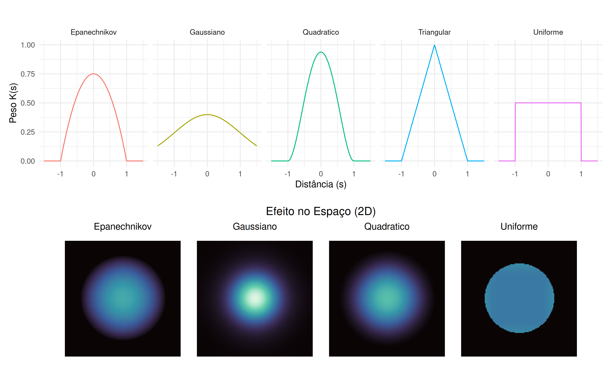
Figura 5.2: Funções de Kernel
A escolha do Kernel dependerá da pesquisa e do pesquisador, tomando em consideração que o Kernel Uniforme atribui peso igual a todos os eventos em uma distância fixa do evento de referência, sendo útil quando a distribuição dos eventos é uniforme, embora seja menos sensível a variações na densidade dos dados. O Kernel Gaussiano atribui pesos baseados na distribuição gaussiana (normal), capturando padrões suaves e contínuos nos dados e sendo adequado para distribuições não uniformes, embora mais sensível a variações locais. O Kernel Epanechnikov, com sua forma parabólica e suporte compacto, é mais eficiente que o Gaussiano, equilibrando características locais e evitando sensibilidade excessiva ao ruído. O Kernel Quadrático, também parabólico, oferece um compromisso entre os Kernels Uniforme e Gaussiano, sendo menos sensível a outliers que o Gaussiano, mas mais sensível que o Uniforme, ideal para equilibrar robustez e suavidade (García-Portugués 2024; Scalon 2024).
Conforme descrito por Moraga (2023) e Scalon (2024), os efeitos de borda tendem a distorcer as estimativas do Kernel, próximo à fronteira (margens) da região de estudo, uma vez que os eventos próximos à fronteira (margens) têm menos vizinhos locais do que os eventos no interior. Uma maneira de lidar com esse problema é modificar a estimativa do Kernel dividindo-a pelo seguinte termo de correção de borda \(e_{h} (s)=\int_{B} h^{-2}K(\frac{z-s}{h})dx\), que representa o volume sob o Kernel centrado em \(z\) que está na região de estudo \(B\)(Gatrell et al. 1996).
Conforme descrito por Adrian Baddeley, Rubak, e Turner (2015), dentre os estimadores de Kernel usuais da função de intensidade destacam-se,\(\hat{\lambda}^{0}(z)=\sum_{i=1}^{n}K(z-s_{i})\),\(\hat{\lambda}^{U}(z)=\frac{1}{e(z)}\sum_{i=1}^{n}K(z-s_{i})\) e \(\hat{\lambda}^{D}(z)=\sum_{i=1}^{n} \frac{1}{e(s_{i})} K(z-s_{i})\), e correspondem a estimador não corrigido, estimador uniformemente corrigido e estimador com correção de Diggle, respectivamente. Nestes estimadores,\(K(\cdot)\) é função densidade de probabilidade Kernel e \(e(s_{i})\) a correção da borda, dada por \(e(s_{i})=\int_{B} K(z-s)dx\).
Além do estimador não paramétricos de kernel, outra maneira de estimar a função de intensidade \(\lambda (s_{i})\), é usar estimadores paramétricos (Seção 5.9).
5.5 Propriedade de segunda ordem
Segundo Mateus (2013) e Pebesma e Bivand (2023), a propriedade de segunda ordem, também conhecida como intensidade de segunda ordem ou densidade, descreve a forma como os eventos estão distribuídos no espaço, podendo indicar se estão distribuídos independentemente uns dos outros (aleatoriedade espacial completa), se tendem a se agrupar (agrupamento) ou se repelem mutuamente (distribuição mais regular do que sob aleatoriedade espacial completa) e, é representada por
e estimada usando as funções correlação par \(g(r)\), função \(L(r)\) e função \(K (r)\) ou variantes não homogêneas dessas funções.
Segundo Gatrell et al. (1996) e Peter J. Diggle (2013), se o processo pontual for estacionário, a propriedade de segunda ordem dependerá apenas da diferença vetorial \(d\) (direção e distância), entre \(s_{i} \, \text{ e } \, s_{i^{'}}\), e não de suas localizações absolutas, ou seja, \(\lambda (s_{i},s_{i^{'}})\equiv \lambda (||s_{i}-s_{i^{'}}||)\). Todavia, se for estacionário e isotrópico, a intensidade de segunda ordem dependerá apenas da distância \(d(s_{i},s_{i^{'}})\) e não da sua orientação ou direção.
Além da intensidade de primeira e segunda ordem, existe a chamada intensidade condicional.
Segundo Peter J. Diggle (2013), a intensidade condicional corresponde à intensidade do evento \(s_{i}\) condicionada à (dada) informação do evento \(s_{i^{'}}\), ou seja, \(\lambda (s_{i}|s_{i^{'}}) = \frac{\lambda (s_{i},s_{i^{'}})}{\lambda(s_{i^{'}})}\). Pela propriedade de independência entre os eventos, descrita na seção Seção 5.2, se os eventos \(s_{i}\) e \(s_{i^{'}}\) forem independentes, a intensidade condicional \(\lambda (s_{i}|s_{i^{'}})\) será dada por \(\lambda (s_{i}|s_{i^{'}}) =\frac{ \lambda (s_{i},s_{i^{'}})}{\lambda(s_{i^{'}})} =\lambda (s_{i})\).
5.6 Padrões de distribuição espacial e sua identificação
Um processo pontual pode exibir três padrões espaciais distintos ( Figura 5.3), que são, o aleatório, onde os eventos (representados por “o”) estão distribuídos de forma aleatória, com média e variância iguais; regular, quando os eventos estão espaçados de maneira uniforme em comparação com um padrão aleatório, resultando em uma variância menor que a média (subdispersão); e agrupado, quando os eventos estão mais próximos uns dos outros do que seria esperado em um padrão aleatório, resultando em uma variância maior que a média (superdispersão) (Lima 2005; Scalon 2024).
Código
set.seed(42) # Para reprodutibilidadejanela <-owin(c(0, 1), c(0, 1))n_pontos <-60# Número alvo aproximado de pontos#Padrão Aleatório (Poisson Homogêneo - CSR)pp_aleatorio <-rpoispp(lambda = n_pontos, win = janela)df_rand <-as.data.frame(pp_aleatorio)df_rand$Tipo <-"(a) Aleatório"#Padrão Regular (Processo de Inibição - Hard Core)pp_regular <-rSSI(r =0.09, n = n_pontos, win = janela)df_reg <-as.data.frame(pp_regular)df_reg$Tipo <-"(b) Regular"#Padrão Agrupado (Processo de Thomas - Cluster)pp_agrupado <-rThomas(kappa =5, scale =0.04, mu =12, win = janela)df_clus <-as.data.frame(pp_agrupado)df_clus$Tipo <-"(c) Agrupado"#plot_padrao <-function(df, titulo, cor) {ggplot(df, aes(x, y)) +geom_point(shape =1, size =2, stroke =1, color = cor) +coord_fixed(xlim =c(0, 1), ylim =c(0, 1)) +theme_bw() +labs(title = titulo, x ="", y ="") +theme(plot.title =element_text(hjust =0.5),axis.text =element_blank(),axis.ticks =element_blank(),panel.grid =element_blank() )}g1 <-plot_padrao(df_rand, "(a) Aleatório", "black")g2 <-plot_padrao(df_reg, "(b) Regular", "blue")g3 <-plot_padrao(df_clus, "(c) Agrupado", "red")g1 + g2 + g3
Figura 5.3: Padrões de Distribuição Espacial: (a) Aleatório (Poisson), (b) Regular (Inibição) e (c) Agrupado (Thomas).
Para identificar os padrões apresentados na Figura 5.3, há várias abordagens, que vão desde estatísticas simples como o índice de Morisita (1959), o índice de Clark e Evans (1954), o índice de Hopkins e Skellam (1954), até o uso de funções (Scalon 2024).
Neste estudo, prioriza-se o uso de funções, pois estas permitem analisar os padrões em diferentes distâncias (r) e podem ser visualizadas graficamente, o que não é possível com simples estatísticas. Entre as funções, destacam-se as funções sumárias homogêneas de distância,\(F(r)\),\(G(r)\),\(J(r)\), bem como as funções sumárias homogêneas de segunda ordem \(K(r)\),\(L(r)\) e \(g(r)\), ou suas extensões não homogêneas. Essas funções são comparadas com um processo pontual Poisson homogêneo \(F_{pois}(r)= G_{pois}(r) = 1- e^{-\pi \lambda r^{2}}\) e \(J_{pois}(r) = 1\) ou \(K_{pois}(r)= \pi r^{2}\),\(L_{pois}(r)= r\) e \(g_{pois}(r)= 1\). Se forem equivalentes, diz-se que o padrão de distribuição espacial é de aleatoriedade espacial completa (AEC), caso contrário, pode ser regular (Inibição) ou agregado (Atração) conforme descrito no Quadro Tabela 5.1.
5.7 Funções \(F(r),G(r),J(r),K(r),L(r)\, e \,g(r)\)
Nesta seção, apresentamos as funções \(F(r),G(r),J(r),K(r),L(r)\, e \,g(r)\) homogêneas, úteis para identificação do padrão de distribuição (regular, aleatório ou agrupado) dos processos pontuais.
Função F (r)
Em um processo pontual \(s\), a distância \(d(z, s_{i}) = min{||z-s_{i}|| : s_{i} \in S}\) representa a menor distância de quaisquer pontos fixos imaginários \(z \in \mathbb{R}^{2}\) para os \(i\)-ésimos eventos \(s_{i}\) de estudo mais próximos, conforme ilustrado na Figura 5.6 (b). Esta distância é comumente referida como a distância do espaço vazio e a função que representa todas as possíveis distâncias (função cumulativa) é denominada função \(F(r)\) e é definida como:
\[
F(r)= P\{d(z, s_{i})\leq r\} \text{ e } \hat{F}(r) = \frac{1}{n(z)} \sum_{k=1}^{K} \mathbb{I}\left\{d(z_{k}, s_{i})\leq r\right\}, \forall r \geq 0,
\tag{5.11}\]
Se a curva \(\hat{F}(r)\) estiver acima da curva \(F_{pois}(r)\), ou seja, \(\hat{F}(r)>F_{pois}(r)\), indica que a distância entre quaisquer pontos \(z\) até o evento mais próximo \(s_{i}\) é menor do que seria sob aleatoriedade espacial completa. Isto sugere que existe menor espaço vazio (não ocupado pelos eventos) e, consequentemente, o padrão espacial dos eventos é regular ( Figura 5.4 (a)). Se \(\hat{F}(r)\) é equivalente a \(F_{pois}(r)\)\((\hat{F}(r) \equiv F_{pois}(r))\), o padrão é considerado aleatório, também designado aleatoriedade espacial completa (AEC) ( Figura 5.4 (b)). Se a curva \(\hat{F}(r)\) estiver abaixo da curva \(F_{pois}(r)\)\((\hat{F}(r) < F_{pois}(r))\), significa que a distância entre quaisquer pontos \(z\) até o evento mais próximo \(s_{i}\) é maior do que seria sob aleatoriedade espacial completa. Nesse caso, há mais espaço vazio e, consequentemente, o padrão espacial dos eventos é agrupado ( Figura 5.4 (c)).
Figura 5.4: Comportamento da Função F(r): (a) Regular (Acima da teórica), (b) Aleatório (Sobreposta) e (c) Agrupado (Abaixo da teórica).
Considerando a região de estudo \(S\), uma sub-região de uma área infinita, o estimador \(\hat{F}(r)\), representado pela expressão Eq. 5.11, apresentará viés. Esse viés ocorre porque a distância \(d(z_{k}, s_{i})\) de um ponto \(z_{k}\) localizado na borda (limite da área de estudo) até o evento mais próximo \(s_{i}\) pode parecer maior do que a distância \(r\), porque na sua determinação, não são considerados os eventos fora da sub-região em estudo (Scalon 2024).
No entanto, se todos os eventos existentes na sub-região fora da área de estudo fossem levados em consideração, essa distância seria menor ou igual a \(r\)(Peter John Diggle 2003; Leininger 2014). Esse viés é conhecido como o “efeito da borda”. A correção para esse viés é denominada “correção da borda” (\(e_{k}\)), que corresponde à distância de um ponto \(z_{k}\) até o limite da área de estudo \(B\) (borda). Portanto, um estimador que não apresenta viés para essa situação é,
\[
\hat{F}_{bord}(r)=\frac{\sum_{k} \mathbb{I}\left\{d\left(z_{k}, s_{i}\right) \leq r\right\} \mathbb{I}\left\{e_{k}>r\right\}}{\sum_{k} \mathbb{I}\left\{e_{k}>r\right\}}, \text{ onde } e_{k}=d(z_{k}, S \cap B), \; r \geq 0 ,
\tag{5.12}\]
onde \(d\left(z_{k}, S \cap B\right)\) representa a distância entre quaisquer pontos amostrais (não eventos) \(z_{k}\) para o evento \(s_{i}\in s\) mais próximo, considerando a existência dos efeitos borda na região \(B\) de estudo.
Função G (r)
Diferentemente da função \(F(r)\), que mede a distância entre um ponto e um evento, a função \(G(r)\) mede a distância entre eventos ( Figura 5.6 (a)). Seja \(s_{i}\) um evento de um processo pontual \(s\), a distância até o vizinho mais próximo \(d_{\min}(s_{i}, s_{i^{'}}) = \min_{i^{'}\neq i}||s_{i^{'}} - s_{i}||\) pode ser expressa por \(d_{\min}(s_{i}, s_{i^{'}}) = d(s_{i}, s_{i^{'}} \setminus s_{i})\), que corresponde à distância mínima de um evento \(s_{i}\) até os outros eventos \(s_{i^{'}}\) diferentes de \(s_{i}\)(Adrian Baddeley, Rubak, e Turner 2015; Scalon 2024).
Conforme mencionado por Peter John Diggle (2003), Leininger (2014) e Scalon (2024), considerando \(n(s)\) como o número de eventos \(s\) em uma região de estudo \(B\) e \(d_{\min}(s_{i}, s_{i^{'}}) = d(s_{i}, s_{i^{'}} \setminus s_{i})\) como a distância do \(i\)-ésimo evento \(s_{i}\) até o evento mais próximo \(s_{i} \setminus s_{i^{'}}\),\(d_{\min}(s_{i}, s_{i^{'}})\) é designada como a distância do vizinho mais próximo. Esta medida inclui distâncias repetidas em pares de vizinhos mais próximos recíprocos {\(d(s_{i}, s_{i^{'}} \setminus s_{i})\) e \(d(s_{i^{'}} \setminus s_{i}, s_{i})\)}, ou seja,
\[
G(r)=P\{d(s_{i}, s_{i^{'}} \setminus s_{i})\leq r \} \quad e \quad \hat{G} (r)=\frac{1}{n(s)} \sum_{i} \mathbb{I}\left\{d\left(s_{i},s_{i^{'}}\setminus s_{i}\right)\leq r\right\}, \quad r \geq 0,
\tag{5.13}\]
onde \(\hat{G}(r)\) é respectivo estimador.
Se a curva \(\hat{G}(r)\) estiver abaixo da curva \(G_{pois}(r)\), ou seja, \(\hat{G}(r)<G_{pois}(r)\), indica que a distância entre quaisquer eventos \(s_{i}\) até os eventos \(s_{i^{'}}\) mais próximo é maior do que seria sob aleatoriedade espacial completa. Nesse caso, há maior distância de separação entre os eventos e, consequentemente, o padrão espacial dos eventos é regular ( Figura 5.5 (a)). Se \(\hat{G}(r)\) é equivalente a \(G_{pois}(r)\)\((\hat{G}(r) \equiv G_{pois}(r))\), o padrão é considerado aleatório, também designado aleatoriedade espacial completa (AEC) ( Figura 5.5 (b)). Se a curva \(\hat{G}(r)\) estiver acima da curva \(G_{pois}(r)\)\((\hat{G}(r) > G_{pois}(r))\), significa que a distância entre quaisquer eventos \(s_{i}\) até os eventos \(s_{i^{'}}\) mais próximo é menor do que seria sob aleatoriedade espacial completa. Isto sugere que existe menor distância de separação entre os eventos e, consequentemente, o padrão espacial dos eventos é agrupado ( Figura 5.5 (c)).
\[
\hat{G}_{bord}(r)=\frac{\sum_{i} \mathbb{I}\left\{e_{i}\geq r \, \cap \, d(s_{i}, s_{i^{'}} \setminus s_{i})\leq r \right\}}{\sum_{i} \mathbb{I}\left\{e_{i}\geq r\right\}}, \, \text{ onde }\; e_{i}= d(s_{i},S \cap B)\quad r \geq 0.
\tag{5.14}\]
Código
set.seed(42)janela <-owin(c(0, 1), c(0, 1))#(b) Aleatório (Referência)pp_aleatorio <-rpoispp(lambda =60, win = janela)# (a) Regular (Inibição forte - Vizinhos afastados)pp_regular <-rSSI(r =0.08, n =60, win = janela)# (c) Agrupado (Atração forte - Vizinhos muito próximos)pp_agrupado <-rThomas(kappa =5, scale =0.03, mu =12, win = janela)# Função auxiliar para calcular G(r) e plotarplot_g_function <-function(pp, titulo, anotacao) { G_calc <-Gest(pp, correction ="km") df_G <-as.data.frame(G_calc)# Limitar o eixo X para focar onde a ação acontece df_G <- df_G[df_G$r <=0.20, ]ggplot(df_G, aes(x = r)) +geom_line(aes(y = theo, linetype ="Teórico (Poisson)"), color ="red", size =0.8) +geom_line(aes(y = km, linetype ="Observado"), color ="black", size =1) +scale_linetype_manual(name ="", values =c("Observado"="solid", "Teórico (Poisson)"="dashed")) +labs(title = titulo, subtitle = anotacao,x ="Distância (r)", y ="G(r)") +theme_minimal() +theme(legend.position ="bottom",plot.title =element_text(size =11))}p1 <-plot_g_function(pp_regular, "(a) Regular", "Obs < Teórico")p2 <-plot_g_function(pp_aleatorio, "(b) Aleatório", "Obs = Teórico (AEC)")p3 <-plot_g_function(pp_agrupado, "(c) Agrupado", "Obs > Teórico")p1 + p2 + p3
Figura 5.5: Comportamento da Função G(r): (a) Regular (Abaixo da teórica), (b) Aleatório (Sobreposta) e (c) Agrupado (Acima da teórica).
Considerando a região de estudo \(s\), uma sub-área de uma infinita área \(B\), o estimador \(\hat{G}(r)\) representado pela expressão Eq. 5.13, apresentará viés, pois a distância \(d(s_{i},s_{i^{'}}\setminus s_{i})\) de um evento \(s_{i}\) que esteja na borda para o evento \(s_{i^{'}}\) mais próximo pode aparentemente ser maior que a distância \(r\), enquanto na realidade, se fossem considerados os eventos que estão fora da área de estudo, esta distância seria menor ou igual a \(r\) ( Figura 5.7 (c)). Este viés ocorre porque a distância \(d(s_{i},s_{i^{'}}\setminus s_{i})\) de qualquer evento em \(B\), para o evento mais próximo que esteja fora da área de estudo não é considerada, resultando em um viés. Portanto, um estimador que não apresentara viés para esta situação em concreto é,
\[
\hat{G}_{bord}(r)=\frac{\sum_{i} \mathbb{I}\left\{e_{i}\geq r \, \cap \, d(s_{i}, s_{i^{'}} \setminus s_{i})\leq r \right\}}{\sum_{i} \mathbb{I}\left\{e_{i}\geq r\right\}}, \, \text{ onde }\; e_{i}= d(s_{i},S \cap B)\quad r \geq 0.
\tag{5.15}\]
Código
# Função auxiliar para desenhar círculosget_circle <-function(center_x, center_y, radius) { angle <-seq(0, 2* pi, length.out =100)data.frame(x = center_x + radius *cos(angle), y = center_y + radius *sin(angle))}# Função G(r)df_pts_g <-data.frame(x =c(0.4, 0.7), y =c(0.4, 0.7), type =c("si", "sj"))radius_g <-sqrt((0.7-0.4)^2+ (0.7-0.4)^2) # Distância euclidianacircle_g <-get_circle(0.4, 0.4, radius_g)p1 <-ggplot() +# Círculo de buscageom_path(data = circle_g, aes(x, y), linetype ="dashed", color ="gray60") +# Eventos (Pontos sólidos)geom_point(data = df_pts_g, aes(x, y), size =4) +# Seta de distânciageom_segment(aes(x =0.4, y =0.4, xend =0.7, yend =0.7), arrow =arrow(length =unit(0.3, "cm")), color ="blue") +# Labelsgeom_text(aes(x =0.4, y =0.4, label ="s[i]"), parse =TRUE, vjust =2, size =6) +geom_text(aes(x =0.7, y =0.7, label ="s[j]"), parse =TRUE, vjust =-1, size =6) +annotate("text", x =0.5, y =0.6, label ="d(s[i], s[j])", parse =TRUE, color ="blue") +coord_fixed(xlim =c(0, 1), ylim =c(0, 1)) +theme_void() +geom_rect(aes(xmin=0, xmax=1, ymin=0, ymax=1), fill=NA, color="black") +labs(title ="(a) Função G(r)\n(Evento para Evento)") +theme(plot.title =element_text(hjust =0.5))# Função F(r)df_evt_f <-data.frame(x =0.7, y =0.6) # Eventodf_pt_z <-data.frame(x =0.3, y =0.4) # Ponto Zradius_f <-sqrt((0.7-0.3)^2+ (0.6-0.4)^2)circle_f <-get_circle(0.3, 0.4, radius_f)p2 <-ggplot() +# Círculo de buscageom_path(data = circle_f, aes(x, y), linetype ="dashed", color ="gray60") +# Evento (Ponto sólido)geom_point(data = df_evt_f, aes(x, y), size =4) +# Ponto Arbitrário Z (Cruz)geom_point(data = df_pt_z, aes(x, y), shape =4, size =5, stroke =2) +# Seta de distânciageom_segment(aes(x =0.3, y =0.4, xend =0.7, yend =0.6), arrow =arrow(length =unit(0.3, "cm")), color ="red") +# Labelsgeom_text(aes(x =0.7, y =0.6, label ="s[i]"), parse =TRUE, vjust =-1, size =6) +geom_text(aes(x =0.3, y =0.4, label ="z"), vjust =2, size =6, fontface ="italic") +annotate("text", x =0.5, y =0.55, label ="d(z, s[i])", parse =TRUE, color ="red") +coord_fixed(xlim =c(0, 1), ylim =c(0, 1)) +theme_void() +geom_rect(aes(xmin=0, xmax=1, ymin=0, ymax=1), fill=NA, color="black") +labs(title ="(b) Função F(r)\n(Ponto Vazio para Evento)") +theme(plot.title =element_text(hjust =0.5))p1 + p2
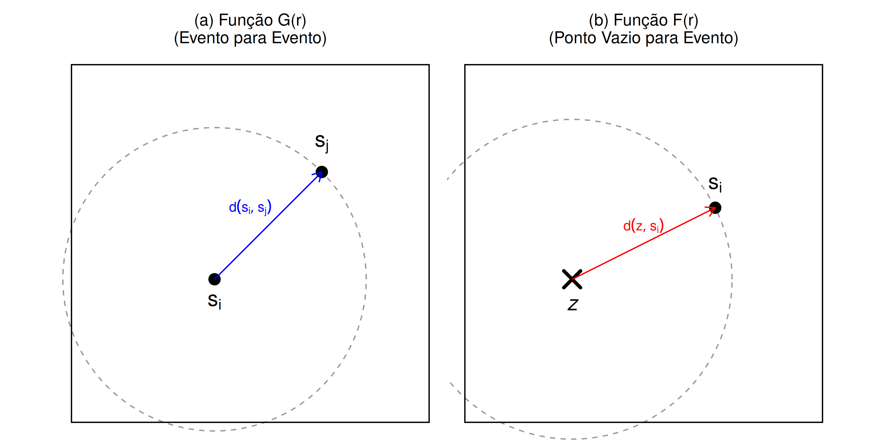
Figura 5.6: Esquema Conceitual: (a) Função G mede a distância entre eventos; (b) Função F mede a distância de um ponto vazio (z) até um evento.
Como \(F_{pois}(r)= G_{pois}(r) = 1- e^{-\pi \lambda r^{2}}\),\(J_{pois} (r) = \frac{1-G_{pois}(r)}{1-F_{pois}(r)}= \frac{1-(1- e^{-\pi \lambda r^{2}})}{1-(1- e^{-\pi \lambda r^{2}})}=1\), consequentemente, se \(\hat{J}(r) > 1\), o processo pontual apresenta um padrão regular ( Figura 5.8 (a)). Se \(\hat{J}(r)\equiv 1\) o processo pontual apresenta um padrão aleatório ( Figura 5.8 (b)). Se \(\hat{J}(r)<1\) o processo pontual apresenta um padrão agrupado ( Figura 5.8 (c)).
Código
set.seed(888) janela <-owin(c(0, 1), c(0, 1))# (b) Aleatório (Referência - Poisson)pp_aleatorio <-rpoispp(lambda =50, win = janela)# (a) Regular (Inibição - Hard Core)pp_regular <-rSSI(r =0.09, n =50, win = janela)# (c) Agrupado (Atração - Thomas)pp_agrupado <-rThomas(kappa =5, scale =0.04, mu =10, win = janela)# Função auxiliar para calcular J(r) e plotarplot_j_function <-function(pp, titulo, anotacao) {# Calcular J(r) J_calc <-Jest(pp, correction ="km") df_J <-as.data.frame(J_calc)# Limitar o eixo X para onde a interação é relevante df_J <- df_J[df_J$r <=0.22&is.finite(df_J$km), ]ggplot(df_J, aes(x = r)) +geom_hline(aes(yintercept =1, linetype ="Teórico (Poisson)"), color ="red", size =0.8) +# Linha Observadageom_line(aes(y = km, linetype ="Observado"), color ="black", size =1) +scale_linetype_manual(name ="", values =c("Observado"="solid", "Teórico (Poisson)"="dashed")) +coord_cartesian(ylim =c(0, 2.5)) +labs(title = titulo, subtitle = anotacao,x ="Distância (r)", y ="J(r)") +theme_minimal() +theme(legend.position ="bottom",plot.title =element_text(size =11))}p1 <-plot_j_function(pp_regular, "(a) Regular", "J(r) > 1 (Inibição)")p2 <-plot_j_function(pp_aleatorio, "(b) Aleatório", "J(r) = 1 (Independência)")p3 <-plot_j_function(pp_agrupado, "(c) Agrupado", "J(r) < 1 (Atração)")p1 + p2 + p3
Figura 5.8: Comportamento da Função J(r): (a) Regular (J > 1), (b) Aleatório (J = 1) e (c) Agrupado (J < 1).
Função \(K (r)\) ou função \(\kappa\) de Ripley
A função de \(K(r)\) ou função \(\kappa\) de Ripley estima o número esperado de \(r\)-ésimos vizinhos de um evento \(s\), dividido pela intensidade \(\lambda (s)\). Em outras palavras, esta função estima o número médio de eventos \(( \mathbb{E}[d(s_{i^{'}},r,s_{i})\vert s_{i^{'}} \in S])\) que estão contidos em um círculo de raio \(r\), centrado em um evento \(s_{i}\) de referência, sem contar o próprio evento \(s_{i}\) (\(r\) é a distância entre o evento de referência \(s_{i}\) até outro evento \(s_{i^{'}}\)). Em seguida, número médio de eventos estimados é dividido pela intensidade \(\lambda (s)\) ( Figura 5.9), ou seja,
onde \(\hat{K}(r)\) e \(\hat{K}_{bord}(r)\) são respectivos estimadores na ausência e na presença dos efeitos da borda respectivamente.\(e_{ii^{'}}\) é correção da borda, \(\mathbb{I}[\cdot]\) função indicadora, \(|B|\) área de região em estudo e \(\hat{\lambda} (s)=n/|B|\) é intensidade (Cressie 1993; Gatrell et al. 1996; Peter J. Diggle 2013; Leininger 2014; A González e Moraga 2023; Scalon 2024).
Código
library(ggplot2)# 1. Configuração do Cenárioset.seed(123)centro_x <-0.5centro_y <-0.5raio_r <-0.25# 2. Gerar Eventos Aleatóriosdf_pontos <-data.frame(x =runif(20, 0, 1),y =runif(20, 0, 1))# Forçar o evento de referência (si) no centrodf_pontos <-rbind(df_pontos, data.frame(x = centro_x, y = centro_y))# 3. Calcular distâncias e classificardf_pontos$dist <-sqrt((df_pontos$x - centro_x)^2+ (df_pontos$y - centro_y)^2)df_pontos$tipo <- dplyr::case_when( df_pontos$dist ==0~"Referencia (si)", df_pontos$dist <= raio_r ~"Vizinho (sj)",TRUE~"Outros")# 4. Criar o Círculo para o plotangulo <-seq(0, 2* pi, length.out =100)circulo <-data.frame(x = centro_x + raio_r *cos(angulo),y = centro_y + raio_r *sin(angulo))# 5. Plotagemggplot() +# Área de busca (Círculo)geom_polygon(data = circulo, aes(x, y), fill ="blue", alpha =0.1) +geom_path(data = circulo, aes(x, y), linetype ="dashed", color ="blue") +# Raio r (Seta)geom_segment(aes(x = centro_x, y = centro_y, xend = centro_x + raio_r *cos(pi/4), yend = centro_y + raio_r *sin(pi/4)), arrow =arrow(length =unit(0.2, "cm")), color ="black") +annotate("text", x = centro_x +0.1, y = centro_y +0.12, label ="r", size =6) +# Pontos (Eventos)geom_point(data = df_pontos, aes(x, y, color = tipo, size = tipo, shape = tipo)) +# Rótulosannotate("text", x = centro_x, y = centro_y -0.04, label ="s[i]", parse =TRUE, color ="red", size =5) +# Estiloscale_color_manual(values =c("Referencia (si)"="red", "Vizinho (sj)"="blue", "Outros"="gray70")) +scale_size_manual(values =c("Referencia (si)"=5, "Vizinho (sj)"=3, "Outros"=2)) +scale_shape_manual(values =c("Referencia (si)"=19, "Vizinho (sj)"=19, "Outros"=1)) +coord_fixed(xlim =c(0, 1), ylim =c(0, 1)) +theme_void() +theme(legend.position ="bottom", legend.title =element_blank(),plot.margin =margin(10, 10, 10, 10)) +labs(title ="Contagem K(r): Quantos pontos azuis existem?")
Figura 5.9: Intuição da Função K de Ripley: Contagem de eventos vizinhos (azuis) dentro de um círculo de raio r centrado no evento de referência si (vermelho).
A interpretação da função K(r) é idêntica à função G(r). Se \(K(r)<K_{pois}(r)\) (abaixo de), significa que na distância considerada, há poucos eventos contidos no círculo do que seria esperado se o padrão fosse aleatório. Consequentemente, o padrão é regular ( Figura 5.10 (a)). Se \(K(r)\equiv K_{pois}\), o padrão é aleatório ( Figura 5.10 (b)). Se \(K(r)>K_{pois}\) (acima de), significa que na distância (r) considerada, existem muitos eventos contidos no círculo do que seria esperado se o padrão fosse aleatório. Consequentemente, o padrão é agrupado ( Figura 5.10 (c)).
Figura 5.10: Comportamento da Função K(r): (a) Regular (Abaixo da teórica), (b) Aleatório (Sobreposta) e (c) Agrupado (Acima da teórica).
Função L (r)
Conforme descrito em Scalon (2024), a função L (r) é uma transformação da função \(K(r)\) sugerida por Besag (1977), visando transformar o modelo Poisson teórico (representada por “- - -”) em uma linha reta, bem como estabilizar a variância nos dados sob completa aleatoriedade espacial ( Figura 5.11), ou seja,
\[L(r)=\sqrt{\frac{K(r)}{\pi}} \text{ e } \hat{L}(r)=\sqrt{\frac{\hat{K}(r)}{\pi}} \tag{5.18}\]
Figura 5.11: Comportamento da Função L(r): (a) Regular (Abaixo da diagonal), (b) Aleatório (Sobre a diagonal) e (c) Agrupado (Acima da diagonal).
Como \(L_{pois}(r) = r\), que corresponde a uma linha reta de inclinação 1, é comum subtrair \(r\) de \(L(r)\), resultando em \(L_{pois}(r) - r = 0\), o que permite estudar o padrão espacial em torno de zero, conforme será detalhado na seção dos resultados.
Em qualquer uma das possibilidades aqui apresentadas, se \(\hat{L}(r) < L_{pois}(r)\), o processo pontual apresenta um padrão regular ( Figura 5.11 (a)). Se \(\hat{L}(r)\equiv L_{pois}(r)\) o processo pontual apresenta um padrão aleatório ( Figura 5.11 (b)). Se \(\hat{L}(r) > L_{pois}(r)\) o processo pontual apresenta um padrão agrupado ( Figura 5.11 (c)).
Função \(g(r)\)
A função g(r), também conhecida como função correlação par, é uma função de densidade de probabilidade padronizada que descreve a ocorrência conjunta dos eventos \(s_{i}\) e \(s_{i^{'}}\) em uma determinada região de estudo e, diferentemente de todas as funções já apresentadas, não é cumulativa ( Figura 5.12), ou seja, \(g(r)=\frac{\lambda(s_{i},s_{i^{'}})}{\lambda(s_{i})\lambda(s_{i^{'}})} \text{ e } \hat{g}_{bord}(r)=\frac{1}{2\pi r |B|} \sum_{i=1}^{n}\sum_{j} \frac{K_{h}\left(||s_{i}-s_{i^{'}}||-r\right)}{\hat{\lambda}(s_{i})\hat{\lambda}(s_{i^{'}})e_{ii^{'}}}\), onde \(g(r)\neq G(r)\),\(\hat{g}_{bord}(r)\) é seu estimador na presença dos efeitos da borda,\(K_{h}\) é função Kernel,\(h\) é largura da banda e \(e_{ii^{'}}\) correção da borda. Na ausência destes,\(\hat{g}(r)\) é obtido omitindo \(e_{ii^{'}}\) em \(\hat{g}_{bord}(r)\)(Peter J. Diggle 2010; A González e Moraga 2023; Scalon 2024).
Segundo Waagepetersen e Guan (2009) e Scalon (2024), se o processo pontual for isotrópico, a função \(g(r)\) é dada pela razão entre a derivada da função \(K(r)\) e \(2\pi r\), ou seja, \(g(r) = \frac{K^{'}(r)}{2\pi r} \text{ e } \hat{g}(r)= \frac{\hat{K}^{'}(r)}{2\pi r}\).
Código
set.seed(42)janela <-owin(c(0, 1), c(0, 1))n_pts <-100# Aumentei para 100 para suavizar as curvas# (b) Aleatório: Poisson Homogêneopp_aleatorio <-rpoispp(lambda = n_pts, win = janela)# (a) Regular: Inibição (Hard Core)pp_regular <-rSSI(r =0.07, n = n_pts, win = janela)# (c) Agrupado: Processo de Thomas# kappa=10 (pais), scale=0.02 (filhos bem pertinho -> pico alto no g(r))pp_agrupado <-rThomas(kappa =10, scale =0.02, mu =10, win = janela)plot_pcf_custom <-function(pp, titulo, anotacao, y_max =NULL) { g_calc <-pcf(pp, correction ="best", divisor ="d") df_g <-as.data.frame(g_calc) df_g <- df_g[df_g$r <=0.20, ] p <-ggplot(df_g, aes(x = r)) +geom_hline(yintercept =1, linetype ="dashed", color ="red", size =0.8) +geom_line(aes(y = iso), color ="black", size =1.2) +labs(title = titulo, subtitle = anotacao,x ="Distância (r)", y ="g(r)") +theme_light() +theme(plot.title =element_text( size =12),plot.subtitle =element_text(size =10))if (!is.null(y_max)) { p <- p +coord_cartesian(ylim =c(0, y_max)) }return(p)}p1 <-plot_pcf_custom(pp_regular, "(a) Regular", "Inicia em ZERO (Inibição) Sobe para 1", y_max =2.5)p2 <-plot_pcf_custom(pp_aleatorio, "(b) Aleatório", "Oscila em torno de 1 (Linha Vermelha)", y_max =2.5)p3 <-plot_pcf_custom(pp_agrupado, "(c) Agrupado", "Pico muito alto no início (>1) Decai rapidamente", y_max =NULL) # Deixa o ggplot decidir a altura do picop1 + p2 + p3
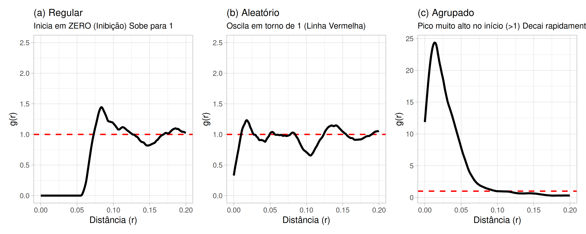
Figura 5.12: Comportamento da Função g(r): (a) Regular (g < 1), (b) Aleatório (g ≈ 1) e (c) Agrupado (g > 1).
Se \(\hat{g}(r) < 1\), o processo pontual apresenta um padrão regular ( Figura 5.12 (a)). Se \(\hat{g}(r)\equiv 1\) o processo pontual apresenta um padrão aleatório ( Figura 5.12 (b)). Se \(\hat{g}(r) > 1\) o processo pontual apresenta um padrão agrupado ( Figura 5.12 (c)).
As funções \(F(r), G(r), J(r), K(r), L(r) \, e \, g(r)\) apresentadas na seção Seção 5.7 são úteis quando a condição de estacionariedade ou homogeneidade é satisfeita. Caso contrário, elas têm sua extensão para processos pontuais não homogêneos, sendo,
\[
\text{para a função K(r) não homogênea } (K_{inhom} (r)).
\]\[
L_{inhom}(r)=\sqrt{\frac{K_{inhom}(r)}{\pi}},\,\hat{L}_{inhom}(r)=\sqrt{\frac{\hat{K}_{inhom}(r)}{\pi}}, \text{para a função L(r) não homogênea } (L_{inhom} (r)) e,
\]
\[
g_{inhom}(r) = \frac{K_{inhom}^{'}(r)}{2\pi r} \text{ e } \hat{g}_{inhom}(r) = \frac{\hat{K}_{inhom}^{'}(r)}{2\pi r}, \text{ para a função g(r) não homogênea} (g_{inhom } (r)).
\]
É comum encontrar na literatura, como em A. J. Baddeley, Møller, e Waagepetersen (2000) e Adrian Baddeley, Rubak, e Turner (2015), a correção de borda \(e_{ii'}\) no numerador, pois apenas eventos dentro de uma certa distância da borda são considerados. Por outro lado, em algumas literaturas, como as de Peter J. Diggle (2010), Leininger (2014) e A González e Moraga (2023), a correção de borda é colocada no denominador, pois o ajuste é feito normalizando a estatística de teste, ou seja, \(e_{ii'}\) é igual a 1 quando o círculo centrado em \(s_{i'}\) ou \(z_{k}\), passando pelo evento \(s_{i}\), está completamente contido na área de estudo. Se parte do círculo estiver fora da área de estudo, então \(e_{ii'}\) é calculada como a proporção do círculo contida dentro da área de estudo. Assim, a escolha da correção de borda dependerá da pesquisa e da preferência do pesquisador.
Apesar das funções homogêneas e não homogêneas apresentarem expressões matemáticas diferentes, a sua interpretação é igual (Quadro Tabela 5.1).
Tabela 5.1: Resumo da interpretação gráfica das funções que capturam o padrão de distribuição espacial.
\(\downarrow\) Padrão
\(F(r)\)
\(G(r)\)
\(J(r)\)
\(K(r)\)
\(L(r)\)
\(g(r)\)
AEC
\(F(r)\equiv F_{pois}(r)\)
\(G(r) \equiv G_{pois}(r)\)
\(J(r) \equiv 1\)
\(K(r) \equiv K_{pois}(r)\)
\(L(r) \equiv L_{pois}(r)\)
\(g(r) \equiv 1\)
Agrupado
\(F(r)<F_{pois}(r)\)
\(G(r)>G_{pois}(r)\)
\(J(r)<1\)
\(K(r)>K_{pois}(r)\)
\(L(r)>L_{pois}(r)\)
\(g(r)>1\)
Regular
\(F(r)>F_{pois}(r)\)
\(G(r)<G_{pois}(r)\)
\(J(r)>1\)
\(K(r)<K_{pois}(r)\)
\(L(r)<L_{pois}(r)\)
\(g(r)<1\)
Padrão \(\uparrow\)
\(F_{inhom}(r)\)
\(G_{inhom}(r)\)
\(J_{inhom}(r)\)
\(K_{inhom}(r)\)
\(L_{inhom}(r)\)
\(g_{inhom}(r)\)
Em um processo pontual, a presença de tendência pode levar as funções apresentadas na seção Seção 5.7 a identificar dependência espacial entre eventos (padrão regular ou agrupado), mesmo que essa dependência não seja devido à afinidade entre os eventos ou à influência de um evento \(s_{i}\) sobre a presença de outro evento \(s_{j}\). A dependência espacial identificada pode resultar da competição por recursos (como nutrientes no solo), e na ausência desses recursos, os eventos não apresentariam dependência espacial. Uma forma eficiente de investigar o padrão de distribuição espacial é a inclusão de envelopes de simulação nas funções \(F(r)\), \(G(r)\), \(J(r)\), \(K(r)\), \(L(r)\) e \(g(r)\) ou suas extensões não homogêneas. Os envelopes representam um intervalo mínimo e máximo dentro do qual é aceitável assumir a existência ou não de dependência espacial. Se as funções \(F(r)\), \(G(r)\), \(J(r)\), \(K(r)\), \(L(r)\) e \(g(r)\) ou suas extensões não homogêneas estiverem totalmente dentro do envelope, mas acima ou abaixo das funções \(F_{pois}(r)\), \(G_{pois}(r)\), \(J_{pois}(r)\), \(K_{pois}(r)\), \(L_{pois}(r)\) e \(g_{pois}(r)\), isso indicará a presença de tendência ( Figura 5.13 (a)). No entanto, se pelo menos uma parte dessas funções estiver fora do envelope ( Figura 5.13 (b)), mantêm-se todas as regras de interpretação apresentadas no Quadro Tabela 5.1.
Figura 5.13: Diagnóstico com Envelopes de Simulação (L-function): (a) Tendência (Poisson Não-Homogêneo) - curva contida ou limítrofe; (b) Dependência (Cluster) - curva rompe o envelope.
Como pode ser observado na Figura 5.13 (a), a função \(\hat{J}(r)\) está abaixo de \(J_{pois}(r)\) e, se não houvesse envelope (área cinza), dir-se-ia que existe dependência espacial e o padrão seria agrupado, conforme descrito na seção Seção 5.6 e no Quadro Tabela 5.1. No entanto, apesar de \(\hat{J}(r)\) estar abaixo de \(J_{pois}(r)\), como está totalmente dentro do envelope, isso significa que os eventos não apresentam dependência espacial (não possuem afinidade natural), mas sim tendência, ou seja, o padrão observado sem considerar o envelope é resultado da tendência, provavelmente porque os eventos (por exemplo, espécies florestais) estão competindo por um recurso que está restrito a uma sub-região.
Na Figura 5.13 (b), se não houvesse envelope (área cinza), haveria dependência espacial e o padrão seria agrupado. Com a incorporação do envelope, a dependência espacial permanece e o padrão continua agrupado, indicando que os eventos possuem uma afinidade natural que não é influenciada por fatores externos (como recursos).
5.9 Modelos de processos pontuais
Identificar o padrão de distribuição (estrutura de dependência) ou tendência espacial dos eventos em um processo pontual é importante, mas por si só não fornece uma análise completa dos possíveis fatores (variáveis) que influenciam essa estrutura observada. É necessário modelar essa distribuição dos eventos, tomando (ou não) como covariáveis os possíveis fatores que podem ajudar a explicar cada padrão observado. Assim, em processos pontuais, existem três classes de modelos mais utilizadas, que são: modelos Poisson, modelos Cox e modelos Gibbs.
5.9.1 Modelos Poisson
Os modelos Poisson são utilizados quando não há dependência espacial entre os eventos, ou seja, o padrão não é regular nem agrupado, como ocorre na presença de tendência ou padrão aleatório. Os modelos Poisson podem ser divididos em duas categorias principais, que são: modelo Poisson homogêneo e modelo Poisson não homogêneo (Isham 2010; Scalon 2024).
Modelo Poisson homogêneo
O modelo Poisson homogêneo é utilizado quando não existem locais com mais eventos em relação aos outros na região de estudo (intensidade constante), ou seja, é um modelo utilizado quando o padrão é aleatório, sinônimo da não existência da tendência.
No modelo Poisson homogêneo, os eventos são independentes e identicamente distribuídos, com função intensidade denotada por \(\lambda (s) = \beta\) e função densidade de probabilidade por
onde,\(\beta\) é uma constante que representa a intensidade (\(\lambda\)), \(n(s)\) )é o número de eventos existentes, B é a região de estudo e \(|B|\) é a respectiva área (Adrian Baddeley, Rubak, e Turner 2015; Scalon 2024).
Modelo Poisson não homogêneo
O modelo Poisson não homogêneo é uma extensão do modelo Poisson homogêneo e é utilizado quando existe tendência, ou seja, quando existem locais com uma maior concentração de eventos em relação a outros na região de estudo (Adrian Baddeley, Rubak, e Turner 2015; J. B. Illian 2019; Scalon 2024). Neste modelo, a intensidade não é constante, mas é uma função determinística (fixa) e pode ser modelada utilizando diversas covariáveis que podem explicar o padrão observado, ou seja,
onde \(\alpha\) é intercepto, \(Z(s)\) é um vetor de covariáveis e \(\theta^{\top}\) são parâmetros (coeficientes) \(\theta_{1}, \theta_{2} , \ldots , \theta_{n}\), associados às covariáveis. Exemplos de covariáveis incluem características do solo, altitude, precipitação, temperatura, diâmetro à altura do peito de árvores, entre outras.
Na ausência de covariáveis, é possível utilizar as coordenadas geográficas (latitude e longitude) ou transformá-las em coordenadas cartesianas (x, y), conforme descrito por Adrian Baddeley, Rubak, e Turner (2015) e Scalon (2024). Conforme descrito por Scalon (2024), o uso das coordenadas cartesianas faz com que a função intensidade assuma várias formas, que são, Linear: \(\lambda_{\theta} (x, y) = \exp \left(\theta_{0} + \theta_{1} x + \theta_{2} y \right)\), onde, \(\lambda_{\theta} (x, y)\) corresponde a função intensidade, variando em função das coordenadas \((x, y)\) (possíveis covariáveis não conhecidas) e \(\theta_{i=\{0,1,2\}}\) parâmetros a serem estimados.
onde \(\beta=\lambda\), outrora designada intensidade dos eventos \(s_{i}\) e \(B\) é a região de estudo.
5.9.2 Modelos Cox
Conforme descrito na seção Seção 5.9.1, a disposição dos eventos na área de estudo pode ser influenciada por diversos fatores (covariáveis), como os fatores ambientais. A escassez desses fatores em certas partes da região de estudo pode resultar em uma menor propensão à ocorrência dos eventos, criando uma tendência na distribuição espacial. Como essa tendência é atribuída a fatores ambientais, é possível, por meio do modelo Poisson não homogêneo, modelar a distribuição dos eventos por área (intensidade) levando em consideração essas variáveis ambientais. O modelo resultante é capaz de capturar (explicar) a variabilidade na distribuição dos eventos observados.
No entanto, é comum que as covariáveis disponíveis não consigam explicar completamente o padrão observado, porque, além da influência das covariáveis, os eventos apresentam uma afinidade natural (dependência espacial). Essa afinidade natural faz com que, ao ajustar um modelo Poisson não homogêneo, este, não seja capaz de explicar completamente variabilidade na distribuição dos eventos observados.
Considerando essa limitação, é possível, em um processo pontual, modelar a função de intensidade como uma função aleatória \(\Lambda(s)\), que além de considerar a influência das covariáveis, pressupõe a existência de dependência espacial entre os eventos. Esse tipo de modelagem resulta em um processo pontual duplamente estocástico (aleatoriedade na intensidade e nos eventos), conhecido como modelo Cox.
Os modelos Cox são uma extensão dos modelos Poisson, nos quais a intensidade originalmente denotada por \(\lambda(s)\) é expandida para incorporar um campo aleatório \(\Psi(s)\), conforme apresentado na Figura 5.14. Este campo aleatório torna a função de intensidade aleatória e denotada por \(\Lambda(s)\), onde \(\{\Lambda = \Lambda(s) : s \in \mathbb{R}^2\}\).
Estes modelos são frequentemente utilizados para modelar padrões pontuais que apresentam dependência espacial do tipo padrão agrupado (Cressie 1993; Scalon 2024).
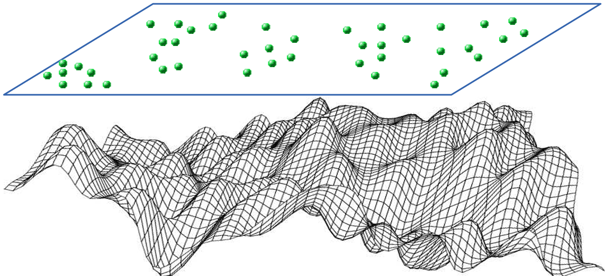
Figura 5.14: Ilustração do campo aleatório (superfície)\(\Psi (s)\), que controla a abundância e distribuição dos eventos em um modelo Cox. Fonte: Jalilian, Safari, e Sohrabi (2020)
Na Figura 5.14, o plano representa a região de estudo onde os eventos estão distribuídos. Os pontos no plano indicam a localização dos eventos. Abaixo do plano, há um campo aleatório que influencia o padrão de distribuição dos eventos no plano. As variações neste campo aleatório refletem áreas com maiores ou menores quantidades da variável aleatória. %É importante observar que, nos modelos Cox, a dependência espacial (agrupamento) pressupõe-se que ocorra exclusivamente entre os descendentes do mesmo progenitor A. J. Baddeley, Van Lieshout, e Møller (1996). Dentre as subclasses dos modelos Cox, incluem-se o modelo Log-Cox Gaussiano e os modelos de Neyman-Scott, que podem ser Matérn, Thomas, Cauchy e Variância gama.
Modelo Log Cox Gaussiano
O papel do campo aleatório apresentado na Figura 5.14 é de explicar a configuração espacial dos eventos, que não é explicada pelas covariáveis (J. B. Illian 2019). Seja, \(\Psi (s)\) um campo aleatório Gaussiano de média \(\mu\) e função covariância \(\gamma(r)\), ou seja, uma função cujo valor em qualquer ponto é uma variável aleatória, que explica a variabilidade espacial não explicada pelas covariáveis. Em outras palavras, um campo aleatório \(\Psi (s)\) é gaussiano se, para qualquer coleção finita de eventos \(s_{1}, s_{2}, \ldots , s_{n}\), qualquer combinação linear \(\beta_{1} \Psi_{s_{1}} +\beta_{2} \Psi_{s_{2}} + \ldots +\beta_{n} \Psi_{s_{n}}\), com \(\beta_{i} \in \mathbb{R}\), tem em uma distribuição normal unidimensional (J. Illian et al. 2008).
Assim, sob essa condição, pode-se definir uma função intensidade aleatória \(\Lambda(s)\), que além das covariáveis, incorpora um campo aleatório Gaussiano, como,
\[
\Lambda(s)= Z(s)\beta^{T} + \Psi (s) .
\tag{5.23}\]
No entanto, a expressão Eq. 5.23 não pode ser diretamente utilizada como função de intensidade em um modelo de Cox, pois o campo aleatório \(\Psi(s)\) sendo Gaussiano pode assumir valores negativos, o que não é admissível em processos pontuais (a intensidade deve ser não-negativa) (Møller, Syversveen, e Waagepetersen 1998; Møller e Waagepetersen 2007). Para resolver essa questão, uma transformação apropriada é aplicar o logaritmo neperiano (ln), resultando no modelo conhecido como Log-Cox Gaussiano, dado por,
Em síntese, um modelo Cox será Log Cox Gaussiano se o campo aleatório \(\Psi(s)\) for Gaussiano (possuir distribuição normal).
5.9.2.1 Modelos de Neyman-Scott: Modelo Matérn, Thomas, Variância-Gama e Cauchy
Desenvolvidos por Neyman e Scott (1958), os modelos Neyman-Scott constituem uma classe de modelos Cox utilizados para descrever padrões de agrupamento quando se presume que os eventos observados são descendentes de um ou mais eventos progenitores (Moller e Waagepetersen 2003; Adrian Baddeley, Rubak, e Turner 2015; Scalon 2024).
Os modelos de Neyman-Scott são compostos por duas etapas distintas. Na primeira etapa, os eventos \(s_{i}\) (progenitores) são gerados, como por exemplo árvores. Na segunda etapa, cada evento \(s_{i}\) (progenitor) gera eventos \(s_{i^{'}}\) descendentes, como por exemplo mudas. O padrão de eventos que consiste exclusivamente nos eventos descendentes (mudas), independentemente de seus progenitores, forma realização do processo de agrupamento Neyman-Scott. Dependendo da distribuição espacial dos eventos descendentes em relação aos seus progenitores, os modelos podem ser do tipo Thomas, Matérn, variância-gama ou Cauchy.
Modelo Matérn
Um modelo Matérn é caracterizado pela distribuição de probabilidade \(h(s_{i^{'}})\) dos descendentes em relação aos seus progenitores, onde os descendentes, em média por progenitor, estão distribuídos uniformemente em um círculo de raio r centrado no progenitor, ou seja, \(h(s_{i^{'}}) = \frac{ \mathbb{I}[||s_{i}-s_{i^{'}}|| \leq r]}{\omega^{2} r^{2}}\), onde \(\omega\) é um parâmetro (escala) de agrupamento dos descendentes em relação aos progenitores \(s_{i}\)(Scalon 2024).
Para J. Illian et al. (2008), no modelo Matérn, a função intensidade \(\Lambda (s_{i^{'}})\) pode ser denotada por \(\Lambda (s_{i^{'}}) = \lambda (s_{i^{'}}) \sum_{s_{i^{'}}\in S} \mathbb{I}_{b(s_{i^{'}}, \:r)} (s)\), onde \(\lambda (s_{i^{'}})\) é a intensidade do \(i\)-ésimo aglomerado formado pelos descendentes,\(\sum_{\in s_{i^{'}}} \mathbb{I}_{b(s_{i^{'}}, \:r)}(s)\) é a soma sobre todos os eventos \(s_{i^{'}}\) no processo Poisson homogêneo \(s\), \(\mathbb{I}_{b(s_{i^{'}}, \:r)} (s)\) é uma função indicadora que é igual a 1 se o evento \(s_{i^{'}}\) estiver no círculo de raio \(r\) centrado no progenitor, e 0 caso contrário.
Adrian Baddeley, Rubak, e Turner (2015) para a mesma função intensidade propuseram a seguinte expressão, \(\Lambda (s_{i^{'}}) = \sum_{i} h(s_{i^{'}}), \, h(s_{i^{'}}) = \left\{\begin{array}{rcl} \frac{s_{i^{'}}}{\pi r^{2}} & \text{ se } & ||s_{i^{'}}|| \leq r \\ 0 & \text{ se } & ||s_{i^{'}}|| > r \end{array} \right.\), onde \(||\cdot||\) representa a norma ou distância entre os eventos \(s_{{i}^{'}}\) e \(r\) distância de referência.
Modelo Thomas
Neste modelo, os eventos descendentes \(s_{{i}^{'}}\) estão distribuídos ao redor dos eventos principais (progenitores) seguindo uma distribuição normal simétrica, ou seja,
onde \(\sigma\) é um parâmetro mede o padrão de agrupamento dos descendentes em relação aos progenitores e \(||\cdot||\) representa a norma ou distância entre os eventos \(s_{{i}^{'}}\)(Adrian Baddeley, Rubak, e Turner 2015; Scalon 2024).
Modelo Cauchy
Neste modelo, a densidade de probabilidade \(h(s_{i^{'}})\) dos descendentes é uma distribuição bivariada de Cauchy, dada por \(h(s_{i^{'}})= \frac{1}{2\pi \omega^{2}} \left[1 + \frac{||s_{i^{'}}||^{2}}{\omega^{2}}\right]^{\frac{-3}{2}}\), onde \(\omega\) é um parâmetro que mede o agrupamento (Jalilian, Guan, e Waagepetersen 2013; Adrian Baddeley, Rubak, e Turner 2015; J. B. Illian 2019).
Modelo Variância Gama
Segundo Jalilian, Guan, e Waagepetersen (2013) e Adrian Baddeley, Rubak, e Turner (2015), no modelo variância-gama, a densidade de probabilidade dos descendentes é variância gama, dada por
onde \(\eta\) é o parâmetro de escala e \(\nu\) é um parâmetro adicional que controla a forma da densidade e deve satisfazer \(\nu>\frac{1}{2}\).\(\Gamma\) é função gama e \(Y_{\nu}\) é função Bessel modificada de segunda espécie e ordem \(\nu\) que pode ser encontrada no livro de Bell (2004).
Para o modelo variância gama, J. Illian et al. (2008), propõe uma possível representação da função intensidade \(\Lambda (s_{{i}^{'}})\), dada por \(\Lambda (s_{{i}^{'}}) = \sum_{s_{{i}^{'}}\in S} \omega_{i} k_{z} (z-s_{{i}^{'}})\), onde \(s\) representa o processo Poisson que gera uma coleção de eventos \(s_{{i}^{'}}\) no espaço \(d\), \(\omega_{i}\) representa uma sequência de variáveis aleatórias independentes e identicamente distribuídas (iid), com distribuição gama. \(k_{z}\) representa a função de densidade de probabilidade (Kernel) que modela a influência ou interação dos eventos.
5.9.3 Modelos Gibbs (Markov)
Os modelos apresentados nas seções Seção 5.9.1 e Seção 5.9.2 são úteis para eventos que não apresentam dependência espacial e para eventos que apresentam dependência espacial do tipo padrão agrupado, respectivamente. Para eventos que apresentam dependência espacial do tipo regular, é necessária uma classe diferente de modelos denominada Gibbs.
Os modelos Gibbs podem ser subdivididos em modelos de interação par-a-par e modelos de interação por área.
Modelos de interação par a par
Os modelos de interação par-a-par são representados pela densidade de probabilidade dada por
Conforme J. Illian et al. (2008), a função de interação \(c(s_{i}, s_{i^{'}})\), também conhecida como potencial par, um termo originário da física, mede a “energia potencial” gerada pela interação entre pares de eventos \((s_{i}, s_{i^{'}})\) em função de sua distância \(||s_{i} - s_{i^{'}}||\).
Segundo Scalon (2024), os modelos Poisson descritos nas seções Seção 5.9.1 e Seção 5.9.2, apesar de não apresentarem dependência espacial (interação), fazem parte dos modelos Gibbs, pois, se \(b(s_{i})\equiv \lambda\) e \(c(s_{i}, s_{i^{'}})=1\) na equação Eq. 5.27, obtém-se a função densidade de probabilidade do modelo Poisson homogêneo, onde \(b(s_{i})=\beta\) e \(\alpha=\exp\{\left(1-\beta\right)|B|\}\). De forma análoga, se \(b(s_{i})\equiv \lambda (s_{i})\) e \(c(s_{i}, s_{i^{'}})=1\) na equação Eq. 5.27, obtém-se a função densidade de probabilidade do modelo Poisson não homogêneo.
Na prática, os modelos da classe Gibbs são frequentemente apresentados com base na intensidade condicional \(\lambda(s_{i}|s_{i^{'}})\), que pode ser interpretada como o número esperado de eventos \(s_{i}\) por unidade de área (infinitesimalmente pequena) em uma localização, dada a existência do evento \(s_{i^{'}}\).
No entanto, Scalon (2024) mostra que as funções densidade de probabilidade \(f(s)\) e intensidade condicional \(\lambda(s_{i}|s_{i^{'}})\) são relacionadas,
e esta intensidade apresenta relação com a intensidade dos modelos Poisson, se \(\prod_{i}^{n}c(s_{i}, s_{i^{'}})=1\) e \(b(s_{i})=\beta\), obtém-se a intensidade do modelo Poisson homogêneo.
Embora modelos Gibbs sejam adequados para padrões regulares, podem identificar padrões de atração (agrupamento) com baixa eficácia e sem aplicação prática significativa (Adrian Baddeley, Rubak, e Turner 2015).
Em processos pontuais, ao utilizar modelos Gibbs de interação par-a-par, diferentes modelos Gibbs podem ser obtidos dependendo da forma que a função de interação \(c(s_i, s_{i'})\) assumir e alguns desses modelos incluem modelos Hard Core (núcleo duro), modelo Strauss, Strauss Hard Core, etc.
Modelo Hard core
Neste tipo de modelo da classe Gibbs considera-se que não existem eventos que estejam mais próximos do que a distância mínima \(h\) e o modelo só é útil na situação em que os eventos são centros de partículas não elásticas esféricas ou circulares do mesmo tamanho, e \(h\) é o diâmetro dessas partículas, que deve ser o mesmo para todos os eventos (J. Illian et al. 2008; Adrian Baddeley, Rubak, e Turner 2015; Scalon 2024). Este modelo, é obtido considerando \(b(s) \equiv \beta\) e
\[c(s_{i}, s_{i^{'}})= \left\{\begin{array}{rcl} 1 & \text{se} & ||s_{i}-s_{i^{'}}||> h \\ 0 & \text{se} & ||s_{i}-s_{i^{'}}|| \leq h \end{array}\right.\], na equação Eq. 5.28., o que resulta na função densidade de probabilidade
É um modelo mais adequado para a sucessão florestal que envolve a morte de árvores existentes em momentos aleatórios e a germinação de novas mudas em lugares e tempos aleatórios (Cressie 1993; Adrian Baddeley, Rubak, e Turner 2015).
Supondo que em cada intervalo de tempo \(\Delta t\), cada árvore existente tenha probabilidade \(m \Delta t\) de morrer, independentemente das outras árvores, onde \(m\) é taxa de mortalidade por árvore e por unidade de tempo. Durante o mesmo intervalo, em uma região \(\Delta a\), nova árvore germina com probabilidade \(g \Delta a \Delta t\), se estiver a mais de \(d\) unidades de distância da árvore mais próxima e considerando \(g\) a taxa de germinação por unidade de tempo. Independentemente do estado inicial da floresta, ao longo de tempo, este processo de nascimento e morte espacial alcançará um equilíbrio no qual qualquer evento da floresta é uma realização do processo de Hard Core com parâmetro \(\beta = \frac{g}{m}\) e diâmetro de Hard Core \(h\).
Este modelo, é obtido considerando \(b(s) \equiv \beta=\frac{g}{m}\) e a função densidade de probabilidade \(f(x)= \left\{\begin{array}{rcl} \alpha (\frac{g}{m})^{n(s)} & \text{se} & ||s_{i}-s_{i^{'}}||> h\\ 0 \, &\text{se} & \text{caso contrário} \end{array}\right.\) e \(\lambda (s_{i}|s_{i^{'}}) = \left \{\begin{array}{rcl} (\frac{g}{m}) & \text{se} & ||s_{i}-s_{i^{'}}||> h\\ 0 &\text{se} & \text{caso contrário} \end{array}\right.\).
Modelo Strauss
Segundo Adrian Baddeley, Rubak, e Turner (2015) e Scalon (2024), o modelo Hard Core é apropriado quando é fisicamente impossível que dois eventos estejam a uma distância menor que \(d\). Se não é impossível que dois ou mais eventos estejam próximos, mas é improvável, um modelo apropriado é o modelo Strauss, obtido considerando \(c(s_{i}, s_{i^{'}})= \left\{\begin{array}{rcl} 1 & \text{se} & ||s_{i}-s_{i^{'}}||> d \\ \gamma & \text{se} & ||s_{i}-s_{i^{'}}|| \leq d \end{array}\right.\) e \(f(s)= \alpha \beta^{n(s)} \gamma^{n(s, d)} \, \text{e} \, \lambda (s_{i}|s_{i^{'}})=\beta \gamma^{n(s_{i}, d,s_{i^{'}})}\), onde \(n(s,d)\) é o número de pares não ordenados de eventos em \(s\) que estão mais próximos do que a distância de interação \(d\); \(n(s_{i}, d,s_{i^{'}})=n(s,d)-n(s_{i^{'}},d)\) é o número de eventos vizinhos de \(s_{i}\) excluindo de \(s_{i^{'}}\) e \(\gamma\) um parâmetro de interação.
Se \(0<\gamma<1\) o modelo caracteriza inibição; se \(\gamma =0\) e não existirem eventos próximos do que a distância \(d\), o modelo passa a ser de Hard Core; se \(\gamma=1\), o modelo é Poisson homogêneo e o modelo não está definido se \(\gamma>1\) pois, a função densidade \(f(s)\) não é integrável.
Modelo Strauss Hard Core
Neste modelo, é impossível que dois ou mais eventos estejam a uma distância menor que a distância de Hard Core (\(h\)), mas eles podem apresentar interação a uma distância \(d > h\), onde \(d\) é a distância de interação de Strauss. A função de interação é expressa por:
Segundo Okabe e Tanemura (2006) observamos frequentemente padrões regulares de eventos no mundo natural e nesse padrão, ocorre um espaçamento entre os \(i\)-ésimos eventos, que pode ser devido à competição entre os eventos por territórios, nutrientes e assim por diante. Para representar o alcance e a suavidade das interações, os chamados potenciais Soft-Core são os mais convenientes. Neste modelo, a interação entre os eventos é suave e diminui gradualmente à medida que a distância \(d\) entre os eventos aumenta. Em contraste com o modelo de Hard core, onde a interação abruptamente se torna zero após uma certa distância, e no modelo de Strauss, onde a interação é constante em uma certa distância e zero fora dela. A função interação é dado por: \(c(s_{i}, s_{i^{'}})= \left(\frac{\sigma}{||s_{i}-s_{i^{'}}||}\right)^{\frac{2}{\kappa}}, \;\sigma>0 \; e\;0<\kappa<1\).
Modelo de interação Diggle-Gates-Stibbard
O modelo proposto por Peter J. Diggle, Gates, e Stibbard (1987) é um modelo de processo pontual com interação par a par, útil para modelar padrões onde a interação entre os pontos é influenciada pela distância entre eles. Este modelo é especialmente adequado quando há evidências de que a intensidade da interação entre os pontos diminui à medida que a distância entre eles aumenta. A função interação é dado por: \(c(s_{i}, s_{i^{'}})= \left\{\begin{array}{rcl} \sin\left(\frac{\pi||s_{i}-s_{i^{'}}||}{2d}\right)^{2} & \text{se} & ||s_{i}-s_{i^{'}}||\leq d \\ 1 \quad \quad \quad \quad & \text{se} & ||s_{i}-s_{i^{'}}||>d \end{array}\right.\).
Modelo de interação Diggle-Gratton
Proposto por Peter J. Diggle e Gratton (1984), o modelo Diggle-Gratton é um tipo de modelo estatístico utilizado para descrever a distribuição espacial de eventos pontuais. A função de potencial de par nesse modelo é definida em termos da distância entre pares de pontos, e quantifica como a presença de um evento afeta a probabilidade de encontrar outro ponto em sua vizinhança. Os parâmetros do modelo incluem a distância mínima de interação \(h\) (também conhecida como “hard core”), a distância máxima de interação \(d\), e um parâmetro \(\kappa\) que controla a força da interação. A função interação é dado por:
Até agora, os modelos Gibbs (Markov) que foram discutidos são conhecidos como modelos de interação par-a-par. Eles descrevem interações intraespecíficas (eventos do mesmo tipo) no caso univariado e interespecíficos espécies (eventos diferentes) no caso multivariado. No entanto, além desses modelos, existem aqueles que consideram a interação por área, os quais são mais adequados quando se considera que os eventos podem competir por recursos, como nutrientes ou alimentos, em uma determinada região.
Conforme descrito em Peter J. Diggle (2013), Adrian Baddeley, Rubak, e Turner (2015) e Nightingale et al. (2019), os modelos de interação por área, também conhecidos como modelos de esfera penetrável de equilíbrio líquido-vapor de Widom-Rowlinson, foram propostos por A. J. Baddeley e Van Lieshout (1995), visando identificar eventos que possam exibir tanto inibição quanto agregação.
Segundo A. J. Baddeley e Van Lieshout (1995), a distinção fundamental entre os modelos de interação par-a-par e de área reside na especificação da função de interação para cada tipo de modelo.
Nos modelos de interação par-a-par, a função de interação é definida como uma função da distância euclidiana \(\left(||\cdot||\right)\) entre cada par de eventos no padrão em estudo. Em contrapartida, a função de interação em um modelo de interação de área é descrita como a área da união de círculos associados a cada evento em um processo pontual.
A função densidade de probabilidade para este modelo é expressa, por
onde \(\alpha\) é uma constante,\(\beta >0\) é um parâmetro de intensidade,\(\gamma>0\) é um parâmetro de interação, e \(A(s, r)\) denota a área da região obtida ao desenhar um círculo de raio \(r\) centrado em cada evento \(s_{i}\) e unir esses círculos.
É importante observar que a função de densidade para o modelo de interação por área é integrável para todos os valores de \(\gamma\), ao passo que, para modelos de interação par-a-par, como o modelo Strauss, para \(\gamma>1\) a função não é integrável. Porém, para ambos modelos, quando \(\gamma =1\), temos um modelo Poisson. Se \(\gamma<1\), os eventos apresentam inibição ou regularidade, enquanto para \(\gamma>1\), os eventos exibem aglomeração ou atração nos modelos de interação por área.
Além das subclasses dos modelos Gibbs mencionadas anteriormente, existem outros que surgem da combinação desses modelos em uma única classe, denominada modelos híbridos. Além disso, existem modelos conhecidos como modelos de interação tripla, nos quais três eventos interagem simultaneamente. Outra possibilidade é o modelo de saturação de Geyer, uma variação do modelo Strauss, porém com uma restrição \(\gamma<1\). No entanto, esses modelos não estão no escopo destas notas de aula, podendo consultar Adrian Baddeley, Rubak, e Turner (2015) para mais detalhes.
5.10 Diagnóstico e Validação de Modelos
5.10.1 Diagnóstico
O diagnóstico dos modelos pode ser feito utilizando diversos tipos de testes estatísticos, a saber:
Teste da razão de verossimilhança - este teste, é útil na presença de covariáveis e avalia se há ou não influência das covariáveis no padrão de distribuição dos eventos em estudo. Suas hipóteses nulas e alternativas são, respectivamente, \(H_{0}: \varphi = 0\) e \(H_{a}: \varphi \neq 0\), onde \(\varphi\) é o vetor de covariáveis. A estatística do teste é dada por
onde \(L_{0}\) e \(L_{1}\) são os valores máximos da verossimilhança sob as hipóteses nula e alternativa, respectivamente. Para decidir sobre a aceitação ou rejeição da hipótese nula de não influência das covariáveis no padrão observado, utiliza-se um teste \(\chi^{2}\) com \(n\) graus de liberdade, onde \(n\) é a dimensão do vetor das covariáveis (\(\varphi\)).
Teste Escore - também designado teste de multiplicação de Lagrange, requer e apenas um modelo considerado de referência, podendo ser Poisson homogêneo \(k(r)=\pi r^{2}\), representando aleatoriedade espacial completa, com parâmetros \(\theta\) associados a cada coordenada x, y. O teste de hipóteses para os parâmetros é: \(H_{0}: \theta = \theta_{0}\) e \(H_{a}: \theta \neq \theta_{0}\), cuja estatística de teste é:
\[S=U(\theta_{0}) I_{\theta}^{-1}U(\theta_{0}), \: \text{ se } \theta = \psi \text{ ou } S=U( \theta)_{\varphi}^{\top} \left( I_{\theta}^{-1}\right)_{\varphi \varphi}U( \theta_{0})_{\varphi}, \text{ se } \theta=(\phi, \varphi)\],
onde \(U(\theta_{0})\) é vetor escore e no caso uniparamétrico é designada função escore, \(I_{\theta}\) é informação de Fisher1 e os subscritos \(\varphi\) e \(\varphi \varphi\), são componentes do vetor score e matriz inversa de informação de Fisher respectivamente.
Teste \(\chi^{2}\) - o teste \(\chi^{2}\) pode ser utilizado tanto para testar a hipótese nula de aleatoriedade espacial completa quanto para avaliar a qualidade de ajuste de um modelo. No contexto de ajuste de modelos, o teste avalia a hipótese nula de que os eventos seguem um modelo espacial específico ajustado em relação à hipótese de que não o seguem. Aqui, ao utilizar o teste qui-quadrado \(\chi^{2}\),\(m-p\) serão os graus de liberdade, onde \(p\) é número de parâmetros do modelo ajustado e \(m\) número de quadrats e a estatística de teste é,
onde \(n_{j}\) e \(\hat{\mu}_{j}\) representam o número observado e esperado de eventos no local \(j\) da área de estudo \(B_{j}\).
Simulações de Monte Carlo - realizadas de forma análoga ao teste contra a hipótese de completa aleatoriedade espacial, entretanto os eventos em estudo são simulados múltiplas vezes usando o modelo ajustado ou um modelo de referência. Se for difícil distinguir visualmente a diferença entre os eventos observados e simulados, o modelo é considerado ajustado ao padrão dos eventos observados (Scalon 2024).
Para evitar equívocos entre tendência e dependência espacial, é importante incorporar envelopes de simulação. Segundo Adrian Baddeley, Rubak, e Turner (2015), para a incorporação dos envelopes de simulação, primeiro calcula-se a estimativa \(s\) para os dados observados \(\hat{S}_{obs}\), onde \(s\) representa qualquer modelo tomado como referência. Em seguida, usando a função \(s\) como referência, gera-se \(m\) padrões de eventos por simulação de Monte Carlo, e obtêm-se as suas estimativas \(\{\hat{S}_{1} (r), \hat{S}_{2} (r), \ldots, \hat{S}_{m} (r)\}\), na distância \(r\) tomada como referência. Considerando \(L_{inf}\) e \(L_{sup}\) como os limites inferior e superior das estatísticas associadas aos padrões simulados nas \(r\)-ésimas distâncias, rejeita-se a hipótese nula de que os eventos observados seguem o padrão do modelo tomado como referência se as estimativas de \(\hat{S}_{obs}\) para as mesmas distâncias estiverem totalmente ou parcialmente acima do limite superior, ou abaixo do limite inferior, ou seja,
Muitos dos métodos de validação de modelos usados na estatística clássica podem ser utilizados na validação de modelos para configurações pontuais, incluindo a análise de resíduos e a avaliação da independência por meio do gráfico dos quantis dos resíduos (Q-Q plot). Estes métodos são aplicáveis a todos os modelos apresentados, exceto aos modelos de Cox, que não permitem a análise dos resíduos.
Para modelos Poisson, os resíduos são dados pela seguinte expressão:
\[
R(B) = n(S\cap B) - \int_{B}\hat{\lambda}(s)ds,
\]
onde \(n(S\cap B)\) representa o número de eventos existentes em toda área de estudo e \(\int_{B}\hat{\lambda}(s)ds\) representa o número esperado de eventos na região \(B\), sendo \(\hat{\lambda}(s)\) a respectiva intensidade estimada pelo modelo ajustado ou função intensidade (modelo ajustado). Assim, se \(R(B)\) for negativo, o modelo superestima a intensidade. Se \(R(B)\) for positivo, o modelo subestima e se for zero, ou aproximadamente, o modelo se ajusta ao padrão dos eventos em estudo. Os resíduos podem ser estimados considerando subáreas \(i\) (quadrats\(i\)) da região de estudo, resultando nos conhecidos resíduos de Pearson, dados por:
conforme descrito em Adrian Baddeley et al. (2005), Adrian Baddeley (2007), Adrian Baddeley et al. (2008), Adrian Baddeley (2010), Adrian Baddeley, Chang, et al. (2013), AJ Baddeley et al. (2019) e Adrian Baddeley, Rubak, e Turner (2015), podendo ser suavizados ou cumulativos.
Para modelos de Cox, como descrito por Adrian Baddeley (2010), uma vez que não é possível testar os resíduos, uma alternativa é recorrer ao método dos momentos e a funções que capturam a estrutura de dependência (F, G, J, K, L, g), juntamente com envelopes de simulação.
Segundo Adrian Baddeley et al. (2022), os métodos existentes para ajustar modelos de processos de agrupamento (modelos Cox) a dados de processos pontuais frequentemente enfrentam dificuldades em convergir, convergem para valores implausíveis dos parâmetros ou apresentam instabilidade numérica. Como resultado, vários métodos foram desenvolvidos para lidar com esses problemas, mas as dificuldades persistem. Alguns autores, como Waagepetersen e Guan (2009) e Adrian Baddeley, Rubak, e Turner (2015), sugerem que o problema está relacionado à fraca estrutura de agrupamento dos dados analisados. No entanto, este problema pode ocorrer tanto em situações de forte agrupamento quanto de agrupamento fraco (Adrian Baddeley et al. 2022).
A validação dos modelos Gibbs segue a mesma lógica dos Poisson, porém substituindo a intensidade pela intensidade condicional e mantendo todas regras, ou seja,
\[
R(B) = n(S\cap B) - \int_{B}\hat{\lambda}(s_{i}|s_{j})ds.
\]
Fora os resíduos, envelopes de simulação e funções que ajudam a identificar a estrutura de dependência espacial, pode-se utilizar o Critério de Informação de Akaike, dado por:
\[
AIC=-2 log L_{max}+2p ,
\]
onde \(L_{max}=L(\hat{\theta})\) é função de máxima verossimilhança para o modelo em questão, e \(p\) é o número de parâmetros para este modelo. Para AIC, o melhor modelo é aquele que tiver valor mais baixo de AIC.
Atualmente, o spatstat é estruturado como um ecossistema de subpacotes especializados:
spatstat.data: Contém os conjuntos de dados.
spatstat.geom: Define as estruturas fundamentais de geometria espacial, como as janelas de observação (owin), padrões de pontos (ppp) e padrões de segmentos de linha (psp). É a base sobre a qual todos os outros subpacotes operam.
spatstat.explore: Focado na Análise Exploratória de Dados Espaciais (ESDA). Inclui funções para estimativa de densidade de kernel (intensidade de primeira ordem) e funções sumárias de segunda ordem, como as funções \(F, G, J, K, L\) e a função de correlação par (\(g\)).
spatstat.model: Contém funções para ajuste de modelos. Permite a modelagem da intensidade via Processos de Poisson Não-Homogêneos e a modelagem de interações via Processos de Gibbs (como os modelos de Strauss e Hard Core). Inclui também diagnósticos de resíduos e validação de modelos.
spatstat.random: Para simulação estocástica de processos pontuais. É essencial para a geração de envelopes de simulação (Testes de Monte Carlo) para validar se um padrão observado se desvia da aleatoriedade espacial completa (AEC).
spatstat.linnet: Dedicado à análise de padrões de pontos que ocorrem sobre redes lineares, como acidentes em rodovias ou crimes em redes de ruas urbanas.
spatstat.univar: Fornece ferramentas auxiliares para distribuições de probabilidade univariadas e técnicas de estimativa de densidade.
spatstat.sparse: Lida com computação matricial esparsa, otimizando o desempenho interno do pacote em cálculos complexos.
spatstat.utils: Conjunto de funções utilitárias internas para manipulação de dados, strings e diagnósticos de sistema.
5.12 Criação, Manipulação e Geometria (spatstat.geom)
Esta seção cobre a construção dos objetos fundamentais. Sem a definição correta da geometria, a estatística é impossível.
Padrões de Pontos (ppp) e Janelas (`owin```)
O objeto ppp requer coordenadas e uma janela owin.
Criação do objeto ppp:
ppp(x, y, window, marks): Construtor principal.
as.ppp(X): Converte data.frames/matrizes.
clickppp(n): (Interativo) Permite clicar no gráfico para adicionar pontos.
Criação Janelas (owin):
owin(xrange, yrange, mask): Cria retângulos (polígonos) ou máscaras binárias.
square(s), disc(r, c), ellipse(a, b): para a geração rápida de primitivas geométricas elementares (quadrados, discos e elipses).
ripras(x, y): Estimador de Ripley-Rasson. Realiza a inferência estatística da fronteira do domínio a partir da distribuição dos eventos, assumindo que a região original é convexa.
convexhull(x, y): Calcula o fecho convexo matemático, determinando o menor polígono convexo possível que engloba todos os eventos observados.
Operações de Conjunto (Janelas)
intersect.owin(A, B), union.owin(A, B), setminus.owin(A, B): úteis para, respetivamente, realizar a interseção (extrair a área comum), a união (combinar as áreas totais) e a diferença setorial (excluir de uma janela a área sobreposta por outra) de domínios espaciais.
inside.owin(x, y, w): Teste de pertinência de ponto.
erosion(w, r), dilation(w, r): Encolhe ou expande a janela por raio \(r\).
marks(X) e marks(X) <- value: Funções para a manipulação de marcas (covariáveis ou metadados). Permitem, respetivamente, extrair e atribuir informações adicionais a cada ponto do padrão espacial (ex: altura da árvore, tipo de espécie, diâmetro), transformando um processo puramente geométrico em um Processo Pontual Marcado.
unmark(X): Remove marcas.
subset(X, subset): Filtra pontos por lógica booleana.
rotate(X, angle), shift(X, vec): Rotação e Translação.
flipxy(X), reflect(X): Espelhamento.
affine(X, mat): Realiza uma transformação afim arbitrária sobre o objeto espacial X. Ao contrário das funções simples de rotação ou translação, esta função utiliza uma matriz linear mat para aplicar distorções geométricas complexas, como cisalhamento (shearing), escala anisotrópica (esticamento desigual entre eixos) e reflexão, preservando a colinearidade e as proporções relativas das distâncias ao longo de linhas paralelas.
Código
# Construção de Janelas (Geometria Construtiva)W_ret <-owin(xrange =c(0, 10), yrange =c(0, 10))W_circ <-disc(radius =3, centre =c(5, 5))W_complexa <-setminus.owin(W_ret, W_circ) # Retângulo menos o furo circular#Janelas inferidas dos dadosx_raw <-runif(20, 0, 10); y_raw <-runif(20, 0, 10)W_ripley <-ripras(x_raw, y_raw) # Estimador estatístico da janelaW_hull <-convexhull.xy(x = x_raw, y = y_raw) # Fecho convexo estrito#Criação do objeto PPPmeu_ppp <-ppp(x = x_raw, y = y_raw, window = W_ret)#Manipulação de Marcasmarks(meu_ppp) <-sample(c("A", "B"), 20, replace =TRUE) # Categóricamarks(meu_ppp) <-runif(20) # Numérica (sobrescreve)sem_marcas <-unmark(meu_ppp)#Transformaçõesppp_rot <-rotate(meu_ppp, angle = pi/4)ppp_shift <-shift(meu_ppp, vec =c(2, 0))ppp_flip <-flipxy(meu_ppp)#MorfologiaW_erodida <-erosion(W_complexa, r =0.5)par(mfrow=c(2,2), mar=c(1,1,1,1))plot(meu_ppp, main="PPP Original")plot(W_ripley, main="Estimador Ripley-Rasson")plot(ppp_rot, main="Rotacionado")plot(W_erodida, main="Erosão da Janela")
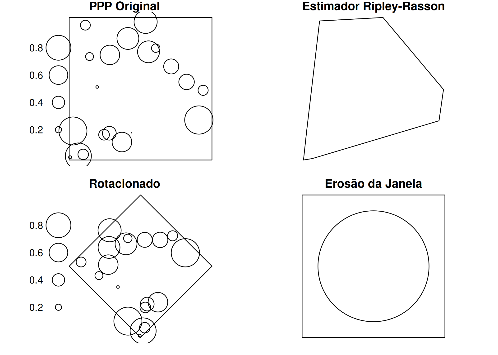
5.13 Imagens, Segmentos, Tesselações e 3D
Imagens (im): Dados raster/grid.
im(mat), as.im(X): Criação/Conversão.
blur(X, sigma): Suavização Gaussiana de imagem.
contour.im(X): Extrai linhas de contorno (vetorial).
Segmentos (psp): Linhas no espaço (falhas geológicas, agulhas).
psp(x0, y0, x1, y1, window): Cria segmentos.
lengths_psp(X), angles.psp(X): Geometria dos segmentos.
crossing.psp(A, B): Detecta onde segmentos se cruzam.
Tesselações (tess): Divisão do espaço em mosaicos.
tess(images), quadrats(X): Cria tesselações.
dirichlet(X): Polígonos de Voronoi.
delaunay(X): Triangulação de Delaunay.
pp3(x, y, z, box3()): Padrão de pontos em 3D.
Código
if (!require("pacman")) install.packages("pacman")pacman::p_load(spatstat)par(mfrow =c(2, 2), mar =c(1, 1, 1, 1))# Imagens (Pixel)W_ret <-owin(c(0, 1), c(0, 1))Z <-as.im(function(x,y) { x^2+ y^2 }, W_ret)plot(Z, main ="Imagem (Pixel)")# Segmentos de Linha (psp) e Cruzamentosset.seed(42)# Criar segmentos aleatóriosseg <-psp(x0=runif(10), y0=runif(10), x1=runif(10), y1=runif(10), window=owin())#auto-intersecçãocruzamentos <-selfcrossing.psp(seg)plot(seg, main ="Segmentos e Cruzamentos", col ="blue")plot(cruzamentos, add =TRUE, col ="red", pch =19, cex =1.5) #Tesselação de Voronoidata(cells)# Calcular Voronoi (Dirichlet)voro <-dirichlet(cells)# Plotagemplot(voro, main ="Voronoi", border ="blue", col =gray.colors(ntiles(voro), alpha=0.3))plot(cells, add =TRUE, pch =16, col ="red", cex =0.8)# riangulação de Delaunaydela <-delaunay(cells)plot(dela, main ="Delaunay", border ="darkgreen")plot(cells, add =TRUE, pch =16, col ="red", cex =0.8)
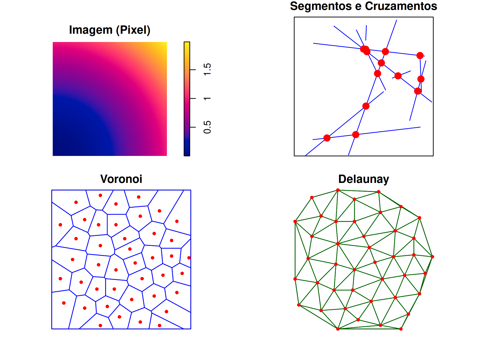
Código
par(mfrow =c(1, 1))
5.14 Análise Exploratória de Dados (spatstat.explore)
Focada em estatísticas descritivas, intensidade e testes de hipótese.
Intensidade (\(\lambda\)) e Covariáveis
summary(X): Visão geral.
clarkevans(X): Índice R (agrupamento vs regularidade).
Estimativa de Densidade (Kernel)
density(X): Kernel fixo.
densityAdaptiveKernel(X): Largura de banda variável (melhor para intensidade heterogênea).
densityVoronoi(X): Estimador constante por polígono de Voronoi.
Seleção de Largura de Banda (Bandwidth)
bw.diggle(X): Minimização do erro quadrático médio (para Cox).
bw.ppl(X): Verossimilhança (para Poisson).
bw.scott(X): Regra de Scott (normal).
Dependência de Covariáveis
rhohat(X, Z): Estima \(\rho(z)\) não parametricamente.
rho2hat(X, Z1, Z2): Intensidade conjunta de duas covariáveis.
roc(X, Z), auc(X, Z): Curva ROC e Área sob a curva para capacidade preditiva da covariável.
Código
par(mfrow=c(2,2), mar=c(1,1,1,1))data(bei); data(bei.extra) # Árvores e gradiente/elevação# Seleção de Banda e Densidadesig <-bw.ppl(bei)dens_fixa <-density(bei, sigma = sig)dens_adap <-densityAdaptiveKernel(bei) # Mais robusto# Dependência de Covariávelrho_elev <-rhohat(bei, bei.extra$elev) # Intensidade vs Elevaçãoplot(rho_elev, main="Rhohat: Efeito da Elevação")# Capacidade Preditiva (ROC/AUC)roc_curve <-roc(bei, bei.extra$grad)area_roc <-auc(bei, bei.extra$grad)plot(roc_curve, main=paste("ROC Gradiente (AUC =", round(area_roc,2), ")"))
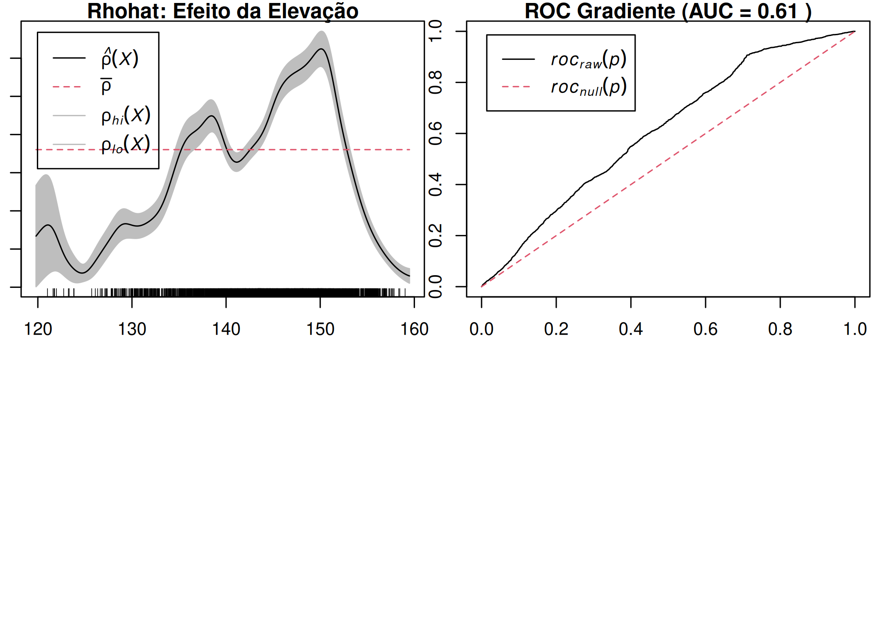
Funções de Distância e Interação
Fest(X): Espaço vazio (“Empty Space”).
Gest(X): Vizinho mais próximo (“Nearest Neighbor”).
Kest(X): Ripley’s K (cumulativa).
Lest(X): Besag’s L (transformação de K para linearizar Poisson).
envelope(X, fun, nsim): Gera bandas de confiança via Monte Carlo para rejeitar CSR.
Código
#Funções de Distância (F, G, J)par(mfrow =c(2, 4), mar =c(1, 1, 3, 1))# Função F (Espaço Vazio)plot(Fest(bei), main ="Função F (Vazio)", legend =FALSE)# Função G (Vizinho Mais Próximo)plot(Gest(bei), main ="Função G (Vizinho)", legend =FALSE)# Função J (Interação)plot(Jest(bei), main ="Função J", legend =FALSE)# Funções de Segunda Ordem (K, L, pcf)# Função K de Ripleyplot(Kest(bei), main ="Função K", legend =FALSE)# Função L (Linearizada), Plotando "L(r) - r" para ficar horizontalplot(Lest(bei), . - r ~ r, main ="Função L", legend =FALSE)# Função g (Correlação de Pares) - pcf# divisor="d" corrige viés em distâncias curtasplot(pcf(bei, divisor ="d"), main ="Função g (PCF)", legend =FALSE)# Análise Inhomogênea e Envelopes# Estimar a intensidade (tendência)lambda_bei <-density(bei, sigma =bw.scott(bei))#Calcular L InhomogêneoL_inhom <-Linhom(bei, lambda = lambda_bei)plot(L_inhom, . - r ~ r, main ="L Inhomogêneo", legend =FALSE)#Envelopes de Simulação (Teste de Monte Carlo)env_L <-envelope(bei, Linhom, sigma =bw.scott(bei), nsim =19, rank =1, global =TRUE, simulate =expression(rpoispp(lambda_bei)))
Generating 38 simulations by evaluating expression (19 to estimate the mean and
19 to calculate envelopes) ...
1, 2, 3, 4, 5, 6, 7, 8, 9, 10, 11, 12, 13, 14, 15, 16, 17, 18, 19, 20,
21, 22, 23, 24, 25, 26, 27, 28, 29, 30, 31, 32, 33, 34, 35, 36, 37,
38.
Done.
Código
plot(env_L, . - r ~ r, main ="Envelopes", legend =FALSE)
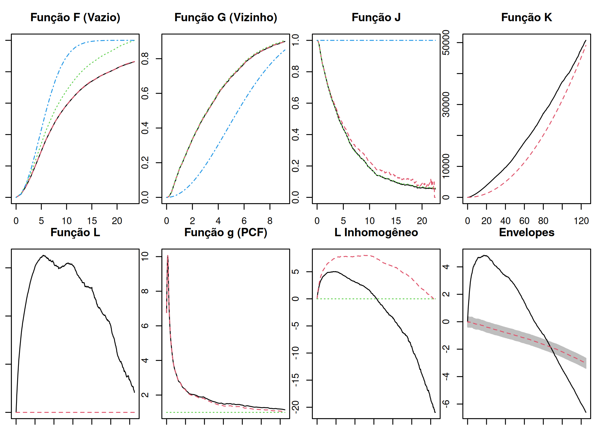
Código
par(mfrow =c(1, 1))
5.15 Análise Multitype e Gráficos de Diagnóstico
Para dados com marcas ou diagnósticos visuais de estrutura.
Kcross(X, i, j), Lcross: Interação Tipo \(i\) vs Tipo \(j\).
Kdot(X, i), Ldot: Tipo \(i\) vs Qualquer outro.
markcorr(X): Correlação para marcas contínuas.
markvario(X): Variograma de marcas.
relrisk(X): Probabilidade espacial relativa de tipos.
Diagnóstico Visual
fryplot(X): Vetores entre todos os pares (detecta anisotropia/reticulado).
miplot(X): Índice de Morisita.
Estatísticas Locais (LISA)
localK(X), localL(X): Contribuição individual de cada ponto.
clusterset(X): Método Allard-Fraley para isolar clusters densos.
nnclean(X): Remove ruído (Byers-Raftery).
sharpen(X): Intensifica pontos para destacar estruturas.
Código
par(mfrow=c(1,1), mar=c(2,3,3,4))data(amacrine) # Células On/Off# Risco Relativo (Probabilidade de ser "On" no espaço)rr <-relrisk(amacrine)plot(rr, main="Risco Relativo")# Correlação Cruzada
5.20.1 Testes de Bondade de Ajuste (Goodness-of-Fit)
*quadrat.test(fit):\(\chi^2\) para modelos ajustados.
cdf.test(fit, covariate): Kolmogorov-Smirnov espacial. Compara distribuição da covariável nos pontos vs. no mapa.
dclf.test(X, model): Diggle-Cressie-Loosmore-Ford. Teste de Monte Carlo comparando envelopes globais (L ou K).
mad.test(X, model): Desvio Absoluto Médio. Similar ao DCLF, mas usa norma \(L_1\).
dg.test(X): Teste de Dao-Genton.
5.20.2 Diagnósticos de Resíduos (PPM)
residuals.ppm(fit): Resíduos brutos, Pearson, e “Inverse-Lambda”.
diagnose.ppm(fit): Plota a tendência cumulativa vs resíduos. Mostra onde o modelo falha.
5.20.3 Diagnósticos de Influência e Sensibilidade
leverage.ppm(fit): Onde a adição de um ponto altera mais o modelo?
influence.ppm(fit): Influência global.
dfbetas.ppm(fit): Mudança nos coeficientes dos parâmetros.
parres(fit, covariate): Partial Residuals. Sugere transformação funcional para covariável.
addvar(fit, covariate): Added Variable Plot. A covariável adiciona informação nova?
Código
if(!require(pacman)) install.packages("pacman")pacman::p_load(spatstat)par(mfrow =c(1, 1), mar=c(1,1,1,1))# Dados: Árvores (bei) e Covariáveis (bei.extra)data(bei)grad <- bei.extra$grad # Gradiente do terrenoelev <- bei.extra$elev # Elevação# Ajuste de um Modelo de Poisson ñ nhomogêneo (dependente do gradiente)fit <-ppm(bei ~ grad)#TESTES DE BOM AJUSTE (Goodness-of-Fit)# Teste de Quadrats (Chi-quadrado espacial)# H0: O modelo ajustado é adequadoqt <-quadrat.test(fit, nx =4, ny =2)plot(qt, main ="Quadrat Test (Resíduos Pearson)")
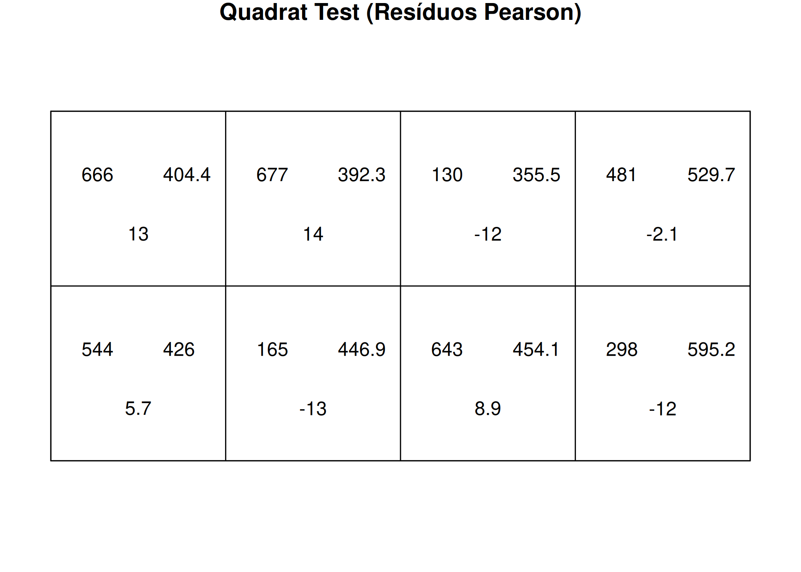
Código
# Teste de Kolmogorov-Smirnov Espacial (CDF)# Verifica se a distribuição da covariável nos pontos difere do mapa geralcdf_t <-cdf.test(fit, covariate=grad)plot(cdf_t, main ="Teste CDF (Covariável: Grad)")
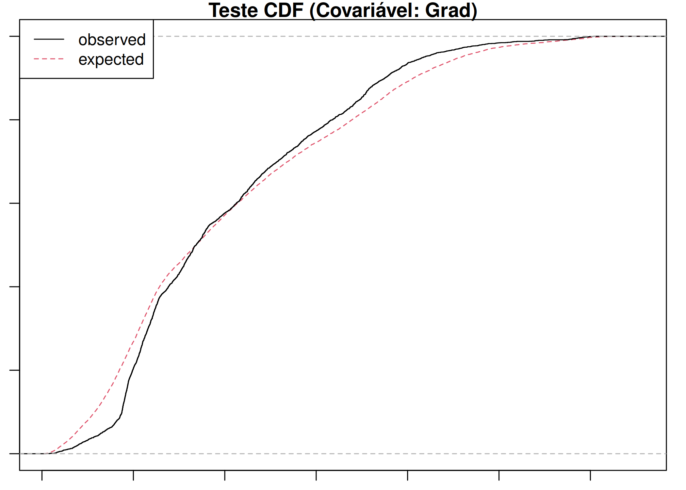
Código
# Testes de Monte Carlo (Comparação de Envelopes Globais)# H0: O padrão observado é gerado pelo modelo ajustadodclf_t <-dclf.test(fit, Lest, nsim =19)
Diggle-Cressie-Loosmore-Ford test of fitted Poisson model
Monte Carlo test based on 19 simulations
Summary function: L(r)
Reference function: sample mean
Alternative: two.sided
Interval of distance values: [0, 125] metres
Test statistic: Integral of squared absolute deviation
Deviation = leave-one-out
data: fit
u = 48139, rank = 1, p-value = 0.05
Maximum absolute deviation test of fitted Poisson model
Monte Carlo test based on 19 simulations
Summary function: L(r)
Reference function: sample mean
Alternative: two.sided
Interval of distance values: [0, 125] metres
Test statistic: Maximum absolute deviation
Deviation = leave-one-out
data: fit
mad = 23.396, rank = 1, p-value = 0.05
Código
# Teste de Dao-Gentondg_t <-dg.test(fit, Lest, nsim =19)
Applying first-stage test to original data... Done.
Running second-stage tests on 19 simulated patterns... 1, 2, 3, 4, 5, 6, 7, 8, 9, 10, 11, 12, 13, 14, 15, 16, 17, 18,
19.
Código
print(dg_t)
Dao-Genton adjusted goodness-of-fit test
based on Diggle-Cressie-Loosmore-Ford test of fitted Poisson model
First stage: Monte Carlo test based on 19 simulations
Summary function: L(r)
Reference function: sample mean
Alternative: two.sided
Interval of distance values: [0, 125] metres
Test statistic: Integral of squared absolute deviation
Deviation = leave-one-out
Second stage: nested, 18 simulations for each first-stage simulation
data: X
p0 = 0.05, p-value = 0.05
Código
# DIAGNÓSTICOS DE RESÍDUOS (PPM)res <-residuals(fit, type ="pearson")diagnose.ppm(fit, which ="all", main ="Diagnóstico Geral")
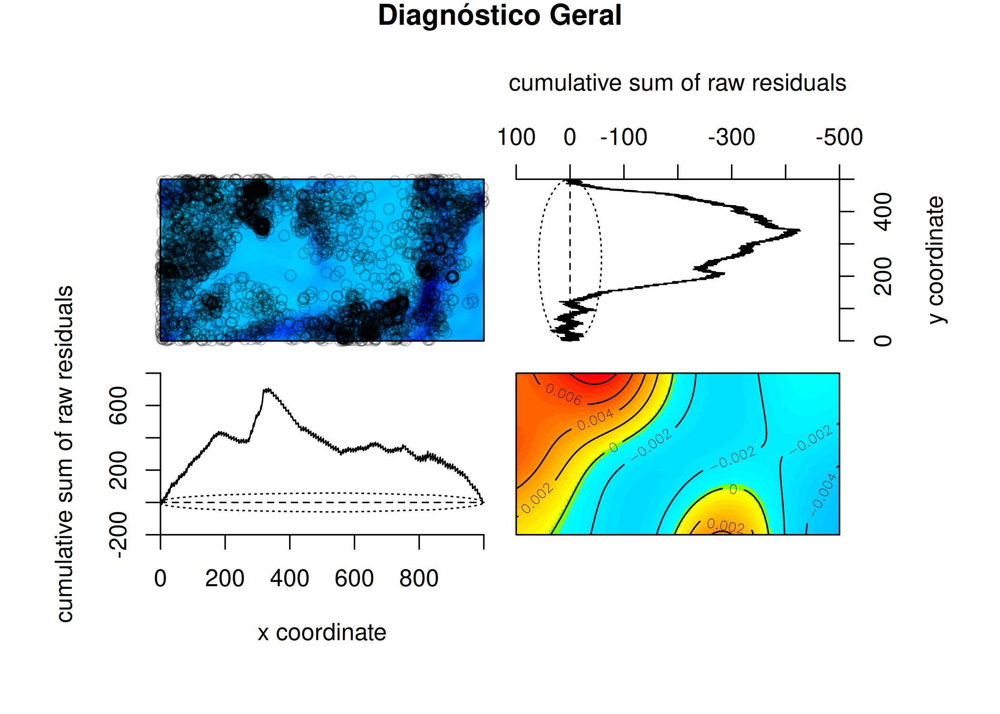
Model diagnostics (raw residuals)
Diagnostics available:
four-panel plot
mark plot
smoothed residual field
x cumulative residuals
y cumulative residuals
sum of all residuals
sum of raw residuals in entire window = -6.924e-09
area of entire window = 5e+05
quadrature area = 5e+05
range of smoothed field = [-0.005587, 0.008917]
Código
#DIAGNÓSTICOS DE INFLUÊNCIA E SENSIBILIDADE# Leverage: Onde a presença de um ponto afeta mais o ajuste?lev <-leverage(fit)# Influence: Medida global de influência (DFBetas espacializado)infl <-influence(fit)# DFBetas: Mudança nos coeficientes se removermos um pontodfb <-dfbetas(fit)plot(lev, main ="Leverage")
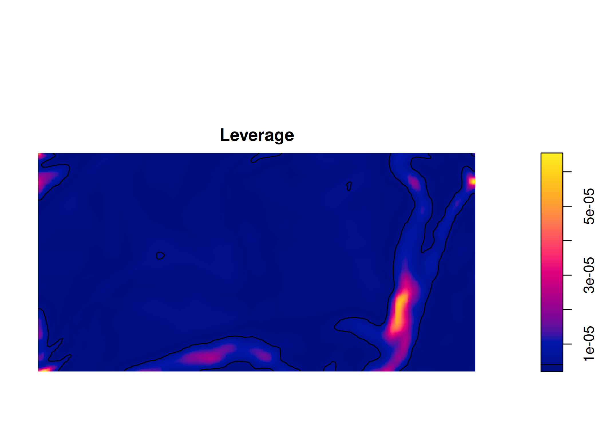
Código
plot(infl, main ="Influence")points(bei, pch =".", col ="white") # Sobrepor pontos
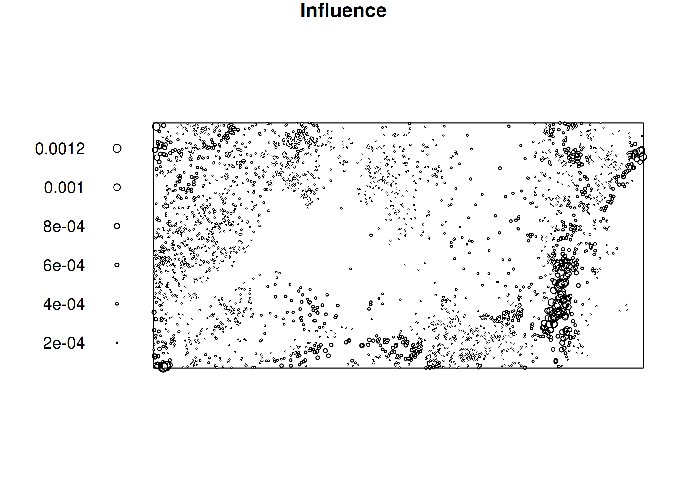
Código
plot(dfb, main ="DFBetas")
Código
# Partial Residuals (Sugere transformação funcional)# Se a linha verde (alisada) desvia da reta tracejada, a relação não é linearparres(fit, "grad", main ="Resíduos Parciais (Grad)")
Código
# Added Variable Plot (A covariável 'elev' adiciona informação nova?)# Testa se devemos adicionar 'elev' ao modelo que já tem 'grad'addvar(fit, covariate=elev, data =list(elev = elev), main ="Added Variable (Elev)")
5.21 Redes Lineares (spatstat.linnet)
Para dados em ruas, rios ou grafos (geometria não-Euclidiana).
Infraestrutura (linnet, lpp)
Rede (linnet):
linnet(vertices, m, edges): Criação manual.
as.linnet(psp): Converte segmentos em rede.
thinNetwork(L, retain): Remove arestas.
insertVertices(L): Adiciona nós.
connected.linnet(L): Acha componentes conexos.
vertices(L): Extrai nós.
Pontos na Rede (lpp):
lpp(coords, L): Cria pontos na rede.
as.lpp(x, y, L): Projeta pontos 2D na rede mais próxima.
clicklpp(L): Adição interativa.
distmap(X): Mapa de distância geodésica (shortest-path).
5.21.1 Análise Exploratória na Rede
Intensidade
density.lpp(X, distance="path"): Kernel usando “calor” na rede (respeita topologia).
bw.lppl(X): Validação cruzada para largura de banda na rede.
Estatísticas K e PCF:
linearK(X), linearKinhom(X): K de Ripley com distância de caminho.
linearpcf(X), linearpcfinhom(X): Correlação de pares na rede.
Tesselações e Imagens na Rede
linfun(f, L): Define função matemática na rede.
linim(X): Imagem pixelada restrita à rede.
lintess(L): Tesselação da rede.
lineardirichlet(X): Voronoi métrico na rede.
divide.linnet(L): Particionamento.
Modelagem e Validação (lppm)
Modelo:
lppm(formula): Ajusta Poisson/Gibbs na rede.
Validação e Diagnóstico
cdf.test.lpp(fit): KS na rede.
berman.test.lpp(X): Teste Z1/Z2 de Berman.
quadrat.test.lpp(X): Qui-quadrado na rede.
residuals.lppm(fit): Resíduos.
lurking(fit): Gráfico de variável oculta (lurking variable plot).
roc.lppm(fit), auc.lppm(fit): ROC para modelos de rede.
Simulação
rpoislpp(lambda, L): Poisson na rede.
rThomaslpp(L): Cluster Thomas na rede.
rjitter.lpp(X): Perturbação sobre as linhas.
simulate.lppm(fit): Simulação do modelo.
Código
if(!require(pacman)) install.packages("pacman")pacman::p_load(spatstat)#INFRAESTRUTURA (Redes e Pontos)data(simplenet)L <- simplenet# Criação de pontos na redeset.seed(42)X <-rpoislpp(lambda =50, L = L)# Projetar pontos 2D para a redepts_2d <-runifpoint(20, win =Window(L))X_proj <-as.lpp(pts_2d, L = L)# Mapa de Distância Geodésicadist_img <-distmap(X)par(mfrow=c(1,3))plot(L, main="Rede (simplenet)")plot(X, main="Pontos (lpp)")plot(dist_img, main="Mapa de Distância")
# TESSELAÇÕES E IMAGENSvoro_net <-lineardirichlet(X)f_net <-linfun(function(x,y,seg,tp) { x + y }, L)im_net <-as.linim(f_net) par(mfrow=c(1,2))plot(voro_net, main="Voronoi Linear")plot(im_net, main="Imagem Linear")
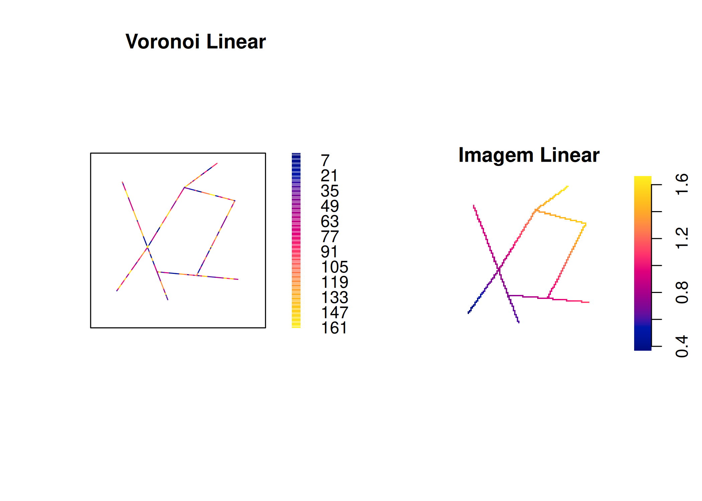
Código
# MODELAGEM (lppm)data(chicago)chicago_clean <-unmark(chicago)# Ajuste de Modelo Poissonfit_lppm <-lppm(chicago_clean ~ x + y)print(AIC(fit_lppm))
[1] 1498.881
Código
# VALIDAÇÃO E DIAGNÓSTICO#Teste de Qui-quadrado# Apenas imprimimos o resultado estatístico. Plotar gera erro em redes lineares.qt_net <-quadrat.test(fit_lppm, nx=3, ny=3)print(qt_net)
Chi-squared test of fitted Poisson model 'fit_lppm' on network using
quadrat counts
data: data from fit_lppm
X2 = 11.875, df = 6, p-value = 0.1296
alternative hypothesis: two.sided
Quadrats: Tessellation on a linear network
9 tiles
Código
#Visualização da Prediçãopred <-predict(fit_lppm)par(mfrow=c(1,2))plot(pred, main="Intensidade Ajustada (Modelo)")plot(chicago_clean, add=TRUE, pch=".", cols="white") # Sobrepor pontos# 3. Teste CDFcdf_net <-cdf.test(fit_lppm, "x") plot(cdf_net, main="CDF Test (Coord X)")
# SIMULAÇÃO # Simular do modelo ajustado (lppm)X_sim_fit <-simulate(fit_lppm, nsim=1)[[1]]# Simular Cluster de Thomas na Rede (Método de Projeção)Net_Chi <-domain(chicago_clean) #Simulamos o processo Thomas em 2D (usando a janela da rede)# kappa: intensidade dos pais, scale: dispersão, mu: filhosX_thomas_2d <-rThomas(kappa=0.01, scale=100, mu=5, win=Window(Net_Chi))# Projetamos os pontos 2D para a rede linearX_thomas <-as.lpp(X_thomas_2d, L=Net_Chi)# Jittering (Perturbação)# Usamos rjitter direto no objeto lppX_jit <-rjitter(chicago_clean, radius=30)# Visualização Comparativapar(mfrow=c(1,3))plot(X_sim_fit, main="Simulação Modelo Poisson", cols="red", cex=0.5, pch=16)plot(X_thomas, main="Cluster Thomas (Projetado)", cols="blue", cex=0.5, pch=16)plot(X_jit, main="Chicago com Jitter", cols="green", cex=0.5, pch=".")
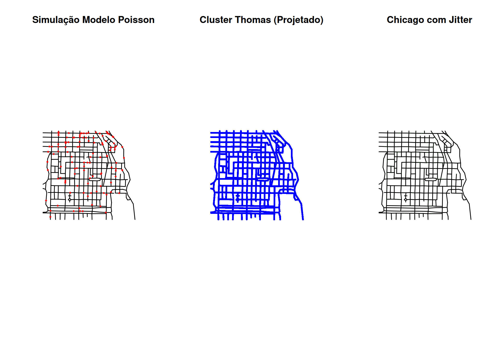
5.22 Integração da Geoestatística, GAMs e processos pontuais
Geoestatística (automap, gstat, geoR): Frequentemente, as covariáveis (ex: pH do solo, temperatura) são medidas apenas em locais amostrais. Utilizamos a krigagem para gerar mapas contínuos (imagens raster) dessas variáveis em toda a janela de observação, conforme discutido no Capítulo 3.
Processos Pontuais (spatstat): Os mapas krigados são convertidos para objetos de imagem (im) e utilizados como preditores espaciais para o padrão de pontos (ppp).
Modelagem (mgcv): Em vez de assumir relações lineares simples, ajustamos a intensidade \(\lambda(u)\) usando splines de suavização (termos s()) para capturar respostas ecológicas complexas e não-lineares. O spatstat permite ajustar esses modelos através da função ppm com a opção `use.gam=TRUE```.
Visualização (gratia): Extraímos o objeto GAM subjacente e utilizamos o pacote gratia para visualizar as funções parciais suaves e seus intervalos de confiança, substituindo os gráficos padrão do R base.
Código
if (!require("pacman")) install.packages("pacman")pacman::p_load(spatstat, gstat, automap, sf, stars, mgcv, gratia, ggplot2, sp)#CARREGAMENTO DOS DADOS (Amostragem de Solo)data(meuse) # Locais de coleta de solo (Rikken & Van Rijn, 1993)data(meuse.grid) # Grade de referência da planície de inundação# Pontos de Coleta para SFpontos_sf <-st_as_sf(meuse, coords =c("x", "y"), crs =28992)grid_sf <-st_as_sf(meuse.grid, coords =c("x", "y"), crs =28992)# Converter para Spatial (Necessário para o automap)input_sp <-as(pontos_sf, "Spatial")grid_sp <-as(grid_sf, "Spatial")gridded(grid_sp) <-TRUE#PREPARAÇÃO DA COVARIÁVEL (KRIGAGEM)# Interpolação da concentração de Zinco para toda a áreakrigagem <-autoKrige(log(zinc) ~1, input_data = input_sp, new_data = grid_sp, debug.level =0)# Conversão para Imagem (Covariável preditora)mapa_zinco_im <-as.im(st_as_stars(krigagem$krige_output)["var1.pred"])# CONFIGURAÇÃO DO PADRÃO DE PONTOS (PPM)janela <-Window(mapa_zinco_im)coords <-st_coordinates(pontos_sf)# Criação do objeto PPP representando os LOCAIS DE AMOSTRAGEMpontos_observados <-ppp(x = coords[,1], y = coords[,2], window = janela, checkdup =TRUE)par(mfrow =c(1, 2), mar=c(1,1,3,1))plot(mapa_zinco_im, main ="Log(Zinco) no Solo", box =FALSE)plot(pontos_observados, main ="Locais de\nColeta (Meuse)", pch =16, cex =0.5, cols ="black", col =c(NA, NA), box =FALSE)par(mfrow =c(1, 1))#MODELAGEM (Investigação do Viés de Coleta)# ?Pergunta: A escolha dos locais de coleta foi influenciada pelo nível de poluição?# Modelo: Intensidade_de_Amostragem ~ s(Zinco)fit_real <-ppm(pontos_observados ~s(zinco), covariates =list(zinco = mapa_zinco_im), use.gam =TRUE) #RESULTADOS E INTERPRETAÇÃO ---modelo_gam <- fit_real$internal$glmfitdraw(modelo_gam) + ggplot2::labs(title ="Resposta da densidade de amostras ao gradiente de poluição",y ="Efeito na Densidade de Coleta (s(zinco))",x ="Log(Concentração de Zinco) [ppm]" ) + ggplot2::theme_bw() + ggplot2::theme(plot.title =element_text(face ="bold"))#Intensidade Predita (Onde o modelo "espera" que haja amostras)mapa_predito <-predict(fit_real, type ="trend")plot(mapa_predito, main ="Densidade de Amostragem Predita (PPM)")plot(pontos_observados, add =TRUE, pch =".", cols ="white")#Diagnóstico de Resíduosresiduos <-residuals(fit_real, type ="pearson")plot(Smooth(residuos, sigma =50), main ="Resíduos Espaciais \n(Vermelho = Amostragem \nmais densa que o previsto)")
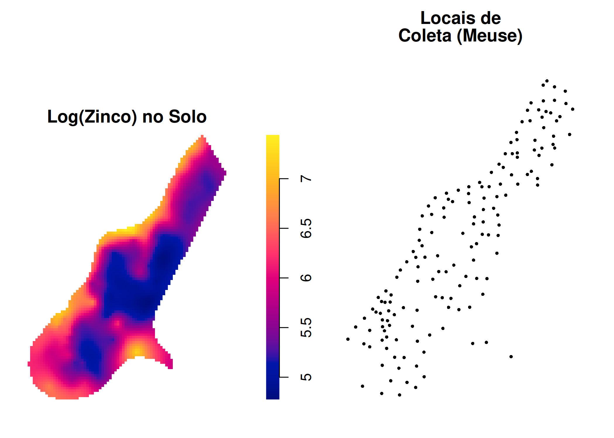
Integração da Geoestatística, GAMs e processos pontuais
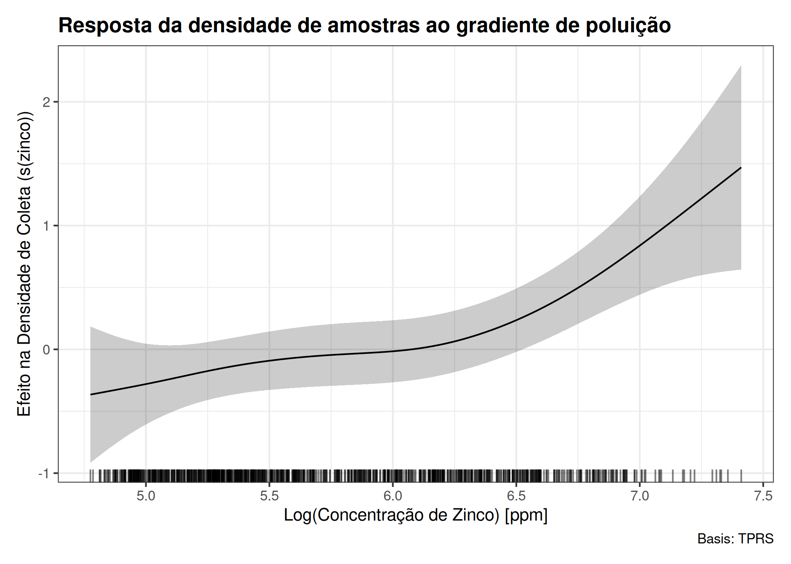
Integração da Geoestatística, GAMs e processos pontuais
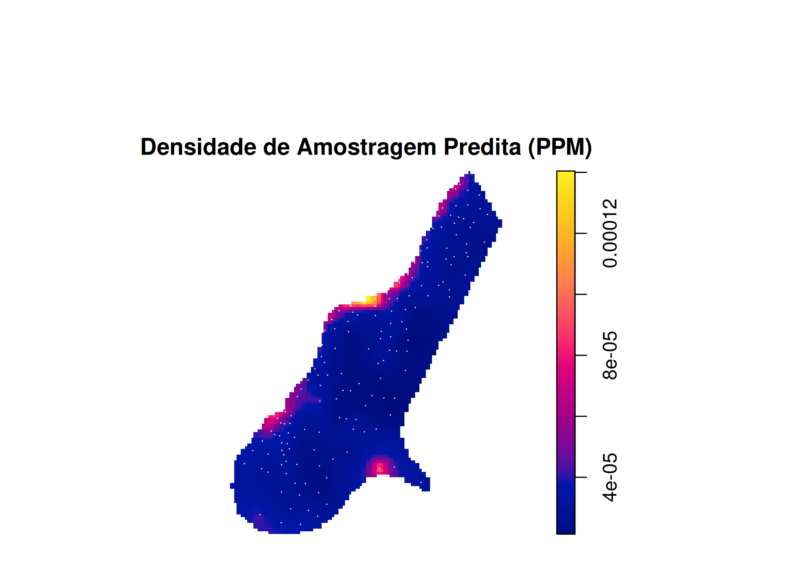
Integração da Geoestatística, GAMs e processos pontuais
Integração da Geoestatística, GAMs e processos pontuais
O gráfico ilustra a relação direta e não linear entre o esforço de amostragem realizado pelos pesquisadores e o gradiente de poluição por zinco, onde o eixo horizontal apresenta o logaritmo da concentração do metal em ppm e o eixo vertical indica o efeito parcial dessa variável na densidade de coleta. A linha preta sólida central descreve o comportamento médio dessa relação, revelando uma curva sigmoide que permanece relativamente estável e próxima de zero em áreas de baixa a média contaminação, mas que apresenta uma inclinação ascendente acentuada a partir do valor 6.0, evidenciando que a estratégia de campo privilegiou uma coleta muito mais intensiva nas zonas mais poluídas.
Envolvendo a curva de tendência, a faixa sombreada em cinza representa o intervalo de confiança de 95%, cuja variação de largura serve como um indicador visual da incerteza estatística do modelo; nota-se que essa faixa é estreita na região central do gráfico, denotando alta precisão, mas se expande significativamente na extremidade direita (valores acima de 7.0), refletindo a escassez de dados nessas condições extremas. Essa distribuição dos dados é confirmada pelas pequenas barras verticais pretas situadas na base da figura (rug plot), que aparecem densamente agrupadas nos valores intermediários de zinco, mas tornam-se esparsas nas concentrações mais elevadas, o que explica matematicamente o aumento da incerteza e confirma visualmente o viés intencional do desenho experimental voltado para as áreas de maior interesse ambiental.
as.im(): Função crucial de “ponte”. Ela converte os resultados espaciais de outros pacotes (como o output do automap ou sf) para o formato de imagem de pixel (im) que o spatstat exige para covariáveis.
ppm(..., use.gam=TRUE): Esta é a função de ajuste de modelos de processos pontuais (ppm). Ao ativar use.gam=TRUE, instruímos o spatstat a não usar o algoritmo padrão de regressão linear (glm), mas sim invocar o mgcv::gam para ajustar os coeficientes da intensidade. Isso permite o uso de termos s() (splines penalizados) na fórmula, capturando tendências complexas que uma função linear ou quadrática simples perderia.
gratia::draw(): Uma função moderna projetada especificamente para objetos gam. Ela produz diagnósticos visuais e gráficos de efeitos parciais (mostrando como a intensidade muda em função da covariável, mantendo o resto constante) prontos para publicação. Como o spatstat armazena o objeto do modelo ajustado internamente, a extração (fit\(internal\)glmfit) permite conectar esses dois mundos.
A González, Jonatan, e Paula Moraga. 2023. “Non-Parametric Analysis of Spatial and Spatio-Temporal Point Patterns”.
Baddeley, Adrian. 2007. “Validation of statistical models for spatial point patterns”. Em Statistical Challenges in Modern Astronomy IV, 371:22.
Baddeley, Adrian et al. 2008. “Analysing spatial point patterns in R”. Technical report, CSIRO, 2010. Version 4. Available at www. csiro. au ….
Baddeley, Adrian. 2010. “Multivariate and marked point processes”. Handbook of spatial statistics, 371–402.
Baddeley, Adrian J, Jesper Møller, e Rasmus Waagepetersen. 2000. “Non-and semi-parametric estimation of interaction in inhomogeneous point patterns”. Statistica Neerlandica 54 (3): 329–50.
Baddeley, Adrian J, e MNM Van Lieshout. 1995. “Area-interaction point processes”. Annals of the Institute of Statistical Mathematics 47: 601–19.
Baddeley, Adrian J, MNM Van Lieshout, e Jesper Møller. 1996. “Markov properties of cluster processes”. Advances in Applied Probability 28 (2): 346–55.
Baddeley, Adrian, Ya-Mei Chang, Yong Song, e Rolf Turner. 2013. “Residual diagnostics for covariate effects in spatial point process models”. Journal of Computational and Graphical Statistics 22 (4): 886–905.
Baddeley, Adrian, Tilman M Davies, Martin L Hazelton, Suman Rakshit, e Rolf Turner. 2022. “Fundamental problems in fitting spatial cluster process models”. Spatial Statistics 52: 100709.
Baddeley, Adrian, e Rolf Turner. 2005. “spatstat: An R Package for Analyzing Spatial Point Patterns”. Journal of Statistical Software 12 (6): 1–42. https://doi.org/10.18637/jss.v012.i06.
Baddeley, Adrian, Rolf Turner, Jorge Mateu, e Andrew Bevan. 2013. “Hybrids of Gibbs Point Process Models and Their Implementation”. Journal of Statistical Software 55 (11): 1–43. https://doi.org/10.18637/jss.v055.i11.
Baddeley, Adrian, Rolf Turner, Jesper Møller, e Martin Hazelton. 2005. “Residual analysis for spatial point processes (with discussion)”. Journal of the Royal Statistical Society Series B: Statistical Methodology 67 (5): 617–66.
Baddeley, AJ, M Hazelton, J Møller, e R Turner. 2019. “Residuals and diagnostics for spatial point processes”. Em. Citeseer.
Bell, William Wallace. 2004. Special functions for scientists and engineers. Courier Corporation.
Besag, J. 1977. “Discussion of Dr Ripley’s paper”. Journal of the Royal Statistical Society, Series B 39 (2): 193–95.
Casella, George, e Roger L Berger. 2001. Statistical inference. Duxbury.
Clark, Philip J, e Francis C Evans. 1954. “Distance to nearest neighbor as a measure of spatial relationships in populations”. Ecology 35 (4): 445–53.
Cressie, N. 1993. Statistics for patial ata: iley eries in robability and tatistics. Wiley-Interscience.
Cronie, O, e MNM Van Lieshout. 2016. “Bandwidth selection for kernel estimators of the spatial intensity function”. arXiv preprint arXiv:1611.10221.
Diggle, Peter J. 2010. Nonparametric methods. Chapman & Hall/CRC Handb. Mod. Stat. Methods.
———. 2013. Statistical analysis of spatial and spatio-temporal point patterns. CRC press.
Diggle, Peter J, David J Gates, e Alyson Stibbard. 1987. “A nonparametric estimator for pairwise-interaction point processes”. Biometrika 74 (4): 763–70.
Diggle, Peter J, e Richard J Gratton. 1984. “Monte Carlo methods of inference for implicit statistical models”. Journal of the Royal Statistical Society Series B: Statistical Methodology 46 (2): 193–212.
Diggle, Peter John. 2003. “Statistical analysis of spatial point patterns”. Em, 2nd ed.
Ferreira, Daniel Furtado. 2020. Fundamentos de probabilidade. Lavras: UFLA.
Gatrell, Anthony C, Trevor C Bailey, Peter J Diggle, e Barry S Rowlingson. 1996. “Spatial point pattern analysis and its application in geographical epidemiology”. Transactions of the Institute of British geographers, 256–74.
Gelfand, Alan E, Peter Diggle, Peter Guttorp, e Montserrat Fuentes. 2010. Handbook of spatial statistics. CRC press.
Hopkins, Brian, e John Gordon Skellam. 1954. “A new method for determining the type of distribution of plant individuals”. Annals of Botany 18 (2): 213–27.
Illian, Janine B. 2019. “Spatial and spatio-temporal point processes in ecological applications”. Em Handbook of environmental and ecological statistics, 97–131. Chapman; Hall/CRC.
Illian, Janine, Antti Penttinen, Helga Stoyan, e Dietrich Stoyan. 2008. Statistical analysis and modelling of spatial point patterns. John Wiley & Sons.
Isham, Valerie. 2010. “Spatial point process models”. Handbook of spatial statistics, 283–98.
Jalilian, Abdollah, Yongtao Guan, e Rasmus Waagepetersen. 2013. “Decomposition of variance for spatial Cox processes”. Scandinavian Journal of Statistics 40 (1): 119–37.
Jalilian, Abdollah, Amir Safari, e Hormoz Sohrabi. 2020. “Modeling spatial patterns and species associations in a Hyrcanian forest using a multivariate log-Gaussian Cox process”. Journal of Statistical Modelling: Theory and Applications 1 (2): 59–76.
Leininger, Thomas J. 2014. “Bayesian analysis of spatial point patterns”. Tese de doutorado, Duke University.
Lima, Renato Ribeiro de. 2005. “Modelagem espaço temporal para dados de incidência de doenças em plantas”. Tese de doutorado, Tese piracicaba-SP.
Mateus, Ana Lúcia Souza Silva. 2013. “Proposição de novas metodologias para análise de aleatoriedade em processos pontuais no espaço-tempo”. Tese (Doutorado em Estatística e Experimentação Agropecuária), Lavras: Universidade Federal de Lavras.
Moller, Jesper, e Rasmus Plenge Waagepetersen. 2003. Statistical inference and simulation for spatial point processes. CRC press.
Møller, Jesper, Anne Randi Syversveen, e Rasmus Plenge Waagepetersen. 1998. “Log gaussian cox processes”. Scandinavian journal of statistics 25 (3): 451–82.
Møller, Jesper, e Rasmus P Waagepetersen. 2007. “Modern statistics for spatial point processes”. Scandinavian Journal of Statistics 34 (4): 643–84.
Moraga, Paula. 2023. Spatial Statistics for Data Science: Theory and Practice with R. CRC Press.
Morisita, Masaaki. 1959. “Measuring of the dispersion of individuals and analysis of the distributional patterns”. Memoirs of the Faculty of Science, E 2, Kyushu Univ. Ser.
Nightingale, Glenna F, Janine B Illian, Ruth King, e Peter Nightingale. 2019. “Area interaction point processes for bivariate point patterns in a Bayesian context”. Journal of Environmental Statistics 9 (2).
Okabe, Masahilo, e Masaharu Tanemura. 2006. “Bayesian Estimation of Soft-Core Potential Models for Spatial Point Patterns”. Journal of the Japan Statistical Society 36 (2): 121–47.
Pebesma, Edzer, e Roger Bivand. 2023. Spatial data science: With applications in R. Chapman; Hall/CRC.
Scalon, João Domingos. 2024. Análise de Dados Espaciais com Aplicações em R. Lavras: Ed. UFLA.
Scalon, João Domingos, Victor Ferreira da Silva, Wélson Antônio de Oliveira, e Mateus Santos Peixoto. 2022. “Statistical characterization of spatial and size distributions of particles in composite materials used in the manufacturing of biomedical instruments”. Brazilian Journal of Biometrics 40 (4): 428–41.
Van Lieshout, MNM, e AJ1422574 Baddeley. 1996. “A nonparametric measure of spatial interaction in point patterns”. Statistica Neerlandica 50 (3): 344–61.
Waagepetersen, Rasmus, e Yongtao Guan. 2009. “Two-step estimation for inhomogeneous spatial point processes”. Journal of the Royal Statistical Society Series B: Statistical Methodology 71 (3): 685–702.
Wiegand, Thorsten, e Kirk A Moloney. 2014. Handbook of spatial point-pattern analysis in ecology. CRC press.
A informação de Fisher é uma medida estatística que quantifica a quantidade de informação que uma variável aleatória contém sobre um parâmetro desconhecido de uma distribuição, sendo definida como a variância do escore, ou seja, a derivada parcial do logaritmo natural da função de verossimilhança em relação ao parâmetro e indica o quão bem podemos estimar um parâmetro com base nos dados observados (Casella e Berger 2001).↩︎